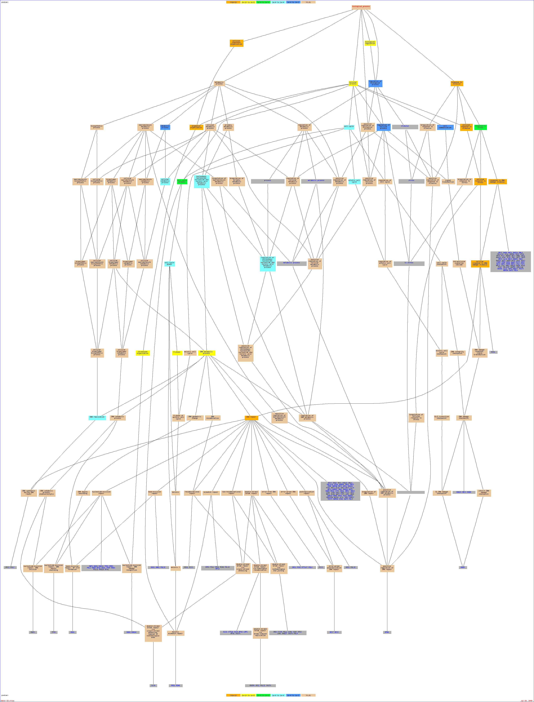

Of your input list, 934 genes are known or unknown but not ambiguous. The total number of genes used to calculate the background distribution of GO terms is 7274.Result Table| Terms from the Process Ontology of gene_association.sgd with p-value <= 0.01 | | Gene Ontology term | Cluster frequency | Genome frequency | Corrected
P-value | FDR | False
Positives | Genes annotated to the term |
|---|
| response to DNA damage stimulus | 90 of 934 genes, 9.6% | 293 of 7274 genes, 4.0% | 2.07e-13 | 0.00% | 0.00 | SNF6, REV7, RAD4, HHT1, RAD24, MCD1, DNL4, YML023C, HTA1, ELG1, RDH54, SMC6, UFO1, FYV6, CTF18, SCC4, TRF5, RPN4, PSY2, YEN1, TFB3, NHP6B, MEC3, RNR1, HMI1, RAD28, DPB3, HTA2, IES4, SML1, HHT2, ECO1, PRI2, SMC5, REV3, SLX4, HEX3, POL2, SIR4, RAD53, YNG2, PDS1, RAD16, NSE1, SIR3, RAD9, RFA2, CTF4, OGG1, IMP2', NSE3, CSM3, SMC1, TFB4, PMS1, RAD3, PSY3, YRA1, XRS2, RLF2, BDF1, MSH6, BDF2, CTK2, PIF1, NPL6, LRP1, CTK1, UNG1, POL32, RAD26, RPB4, RFA1, PSO2, YOL063C, RAD54, YBR100W, MUS81, SLX1, YAF9, RAD27, YKU70, RTT101, NHP6A, ESA1, EAF5, RFC2, RTT107, POL4, SAC3 | | localization | 262 of 934 genes, 28.1% | 1316 of 7274 genes, 18.1% | 5.42e-13 | 0.00% | 0.00 | CRN1, ERP4, ATG2, TPM1, LAS17, PEP3, MDM1, PNS1, GFD1, MEP1, YDR119W, MSO1, ERV29, YIL023C, ABF2, BUD7, FCY21, MRH1, TLG2, ARN1, YPL221W, PEX22, IKI3, TEL2, MIG2, NPL4, DDI1, YDL046W, VPS28, YMR034C, RIC1, COG7, FRE1, SEC10, DYN3, PDS1, NEO1, FRE6, MUP3, FIT3, BOS1, ATG11, BUD13, YMD8, SPC72, ESBP6, FET3, CBK1, AVT1, YOL075C, AAC1, YGL114W, ADY3, SEC61, YNL275W, SEC53, NPL6, YDL072C, CUE1, EMP46, OSH2, NDL1, BET3, CAN1, ZRT2, CCZ1, AKR1, COG4, VAM7, IPL1, ERP5, HXT7, NUP116, SAR1, ERG3, YOP1, ARL3, NIP100, BCP1, PEP12, SPO14, YDL199C, YGL079W, STE6, YDL099W, VPS20, HSP104, PMR1, SCC4, ATG4, VPS71, RPF1, RGP1, BZZ1, SMY1, MDM30, SMC2, FIT1, PEX5, APL5, ERV41, SEC6, PLC1, FRE3, VRG4, LHS1, DSS4, NHX1, YRA2, VMA4, YRB1, AKR2, SSO1, SIT1, YLR016C, PHO90, RFA1, COG3, GYP8, VTC2, YDR338C, VPS16, SPC3, ATG26, BRE4, ATG13, GPA1, AKL1, ULP1, YDL010W, SEC72, ENA2, YHL035C, RCR2, REI1, RVS161, YGR130C, SED5, FRE2, FTR1, YPT6, ZRT1, YBR287W, SBH2, VTA1, YKR078W, MTH1, EXO70, TRK1, EMP24, COG8, NHA1, SYS1, YBL060W, YRM1, GOS1, RUD3, YBR241C, SEC15, GSP2, ATG20, RAD53, YIP3, YDR387C, YIR003W, PEX12, YLR022C, VPS5, HIP1, FKS1, PEX3, TIF6, SLY41, AVT5, ATG5, PHO91, ZRT3, FUN26, RMD7, VPS41, NCR1, VPS64, RPB4, GSG1, DID4, AVT6, YNL321W, HXT6, DUR3, SPF1, SEC8, ZDS2, PUF6, EXO84, IMH1, TOF2, VPS68, SAC3, GBP2, PMP3, YPR174C, RER1, TPO1, KHA1, YDR506C, YDL206W, OLE1, STV1, JNM1, ZDS1, BNI1, GTS1, LEM3, SEC17, SEC3, YLR164W, MRL1, VMA10, CCC2, VTI1, BUB1, MEH1, CLN3, PEX15, YOR291W, DYN1, SMF3, TOP1, TFP3, VPS21, SIR3, RFA2, DJP1, ARC19, GEA2, VPS17, HSE1, CHS5, VPS27, YKT6, FIT2, SBE22, YRA1, SSQ1, NUP85, GLE1, LTE1, VPS30, VPS4, PAC11, HVG1, SRN2, ECM10, SFT2, YLR004C, VMA8, MSC2, BFR2, VCX1, CIS1, SMF2, YCG1 | | organelle organization | 236 of 934 genes, 25.3% | 1153 of 7274 genes, 15.9% | 1.01e-12 | 0.00% | 0.00 | REV7, RAD4, CRN1, ATG2, TPM1, LAS17, RVS161, SET1, PEP3, HSP42, SET3, SFI1, MDM1, HTA1, SED5, ELG1, RDH54, YOR227W, ABF2, RDI1, CTF18, CTF3, CSE4, GAC1, RPO41, TLG2, ARP5, RSF1, EXO70, EMP24, MEC3, FIN1, SYS1, HMI1, PEX22, HTA2, GOS1, SML1, HHT2, CHL1, TSC11, TEL2, YRF1-5, SEC15, HOS1, CDC45, NHP10, GSP2, PDS5, SPC34, DUO1, VIK1, YRF1-7, SEC10, PDS1, REX2, NEO1, PEX12, YPL267W, UME6, PEX3, RNT1, ATG11, SPC72, CSM3, YOR060C, YBR095C, CNM67, XRS2, GIN4, SPO16, HIR2, RLF2, BDF1, ADY3, PIF1, NPL6, NKP1, IRR1, SRC1, LGE1, SWR1, SPC110, YDR219C, RMD7, VPS41, SPC105, CYC8, HTZ1, DID4, GSG1, RPO21, SAS4, NDL1, YGR277C, YAF9, CCZ1, SEC8, VAM7, YKU70, RTT101, SPA2, IPL1, NHP6A, YPL216W, NAT4, NFI1, SNT1, EAF5, EXO84, TOF2, SLK19, SAC3, SNF6, NUP116, HSF1, CCL1, GBP2, HDA2, YPR174C, HHO1, NIP100, CNN1, HHT1, PEP12, MCD1, OLE1, HST4, YMR134W, YRF1-3, VPS20, BNI1, CLB5, PCL1, SEC17, TOP2, THI4, SCC4, PET18, SEC3, ATG4, TRF5, VPS71, YOR084W, TFB3, LDB7, NHP6B, SIR1, VMA10, ATG17, RGP1, BZZ1, MDM30, SWA2, SMC2, ECO1, DSN1, SPT7, MCM21, CBF2, KIP1, RIO1, VTI1, BUB1, BRE1, CLN3, PEX5, HEX3, POL2, CSE2, PEX15, IML3, SIR4, YRF1-4, DYN1, MSB4, TOP1, HMG2, SEC6, RED1, YNG2, SPH1, AVO2, SNF12, RAD16, SIR3, DJP1, RFA2, CTF4, AVO1, ARC19, GEA2, PEA2, SPC98, YRF1-1, ENO1, MAD3, BUB2, YKT6, NBP1, SMC1, TFB4, SWI3, SMC3, VMA4, NUP85, SSO1, BNI5, GLE1, SPC42, LTE1, VPS4, CDC7, STE20, SAS5, ECM10, KAR1, SPC29, YMR163C, RFA1, RAD54, ISW1, VTC2, YHR127W, VPS16, CIS1, ISW2, STN1, YCG1, ESA1, GPA1, AKL1, TID3, RFC2, ULP1, GTT3 | | cellular response to stress | 133 of 934 genes, 14.2% | 530 of 7274 genes, 7.3% | 1.22e-12 | 0.00% | 0.00 | REV7, BCK1, RAD4, ATG2, YLR126C, SET1, HTA1, ELG1, RDH54, YOR292C, YTP1, SMC6, YIL023C, SPG5, CTF18, STE11, KTR2, YOR052C, YEN1, MOH1, MEC3, YNL305C, HMI1, HTA2, STF2, HHT2, PRI2, ATG20, RAD53, PDS1, NSE1, RAD9, RCK2, STB5, CSM3, ATG5, RAD3, PSY3, XRS2, SPI1, BDF1, PIF1, ASP3-3, UNG1, POL32, RPB4, MUS81, SLN1, SLX1, YAF9, CCZ1, HXT6, YKU70, RTT101, NHP6A, SNT1, EAF5, RTT107, YPL071C, POL4, HXT7, YMR090W, SAC3, SNF6, HHT1, YDR506C, RAD24, DNL4, SSK22, MCD1, YML023C, FYV6, YNL200C, MSB2, SWI6, HSP104, SCC4, ATG4, RPN4, HSP12, TRF5, YKL151C, TFB3, NHP6B, ATG17, RPF1, YCR079W, RAD28, GPH1, DPB3, ECO1, RNR3, SMC5, SLX4, REV3, HEX3, POL2, SIR4, FLO1, YNG2, RAD16, ASP3-1, LHS1, SIR3, CTF4, RFA2, OGG1, ASP3-2, YGP1, IMP2', NSE3, ASP3-4, SMC1, TFB4, PMS1, YRA1, SEC59, VPS30, MSH6, BDF2, UBX3, STE20, LRP1, RAD26, PSO2, RFA1, YBR100W, RAD54, RAD27, ATG13, ESA1, RFC2, YDL010W | | DNA repair | 78 of 934 genes, 8.4% | 244 of 7274 genes, 3.4% | 2.11e-12 | 0.00% | 0.00 | SNF6, REV7, RAD4, HHT1, RAD24, DNL4, YML023C, HTA1, ELG1, RDH54, SMC6, FYV6, CTF18, SCC4, TRF5, RPN4, YEN1, TFB3, NHP6B, MEC3, HMI1, RAD28, DPB3, HTA2, HHT2, ECO1, PRI2, SMC5, REV3, SLX4, HEX3, POL2, SIR4, RAD53, YNG2, PDS1, RAD16, NSE1, SIR3, RAD9, RFA2, CTF4, OGG1, IMP2', NSE3, CSM3, SMC1, TFB4, PMS1, RAD3, PSY3, YRA1, XRS2, BDF1, MSH6, BDF2, PIF1, LRP1, UNG1, POL32, RAD26, RPB4, RFA1, PSO2, RAD54, YBR100W, MUS81, SLX1, YAF9, RAD27, YKU70, NHP6A, ESA1, EAF5, RFC2, RTT107, POL4, SAC3 | | response to stimulus | 235 of 934 genes, 25.2% | 1155 of 7274 genes, 15.9% | 2.52e-12 | 0.00% | 0.00 | GPR1, REV7, BCK1, RAD4, ATG2, YLR126C, LAS17, PHM6, RVS161, TIR1, SET1, PEP3, HSP42, HTA1, ELG1, RDH54, YOR292C, TAP42, FRE2, YTP1, SMC6, YIL023C, SPG5, CTF18, STE11, KTR2, GAC1, PSY2, YOR052C, YEN1, NHA1, MOH1, MEC3, YNL305C, CDD1, RNR1, KCS1, HMI1, YRM1, HTA2, IES4, GOS1, STF2, SML1, HHT2, PRI2, YJL055W, AAD10, MIG2, OCA1, YLL029W, XBP1, ATG20, TIS11, RAD53, PDS1, NSE1, RAD9, UME6, RCK2, MET30, STB5, PRR2, CSM3, FET3, ATG5, RAD3, CSG2, CBK1, PSY3, XRS2, SPI1, HIR2, RLF2, ZRT3, SEY1, BDF1, PGD1, PIF1, NPL6, CUP2, ASP3-3, UNG1, POL32, VPS64, RPB4, NRG1, YOL063C, MUS81, SLN1, RRI2, SLX1, YAF9, CCZ1, HXT6, AKR1, YKU70, TFC6, RTT101, SPA2, NHP6A, MRK1, SNT1, EAF5, RTT107, YPL071C, IMH1, POL4, GTT2, SAC3, YMR090W, HXT7, SNF6, HSF1, CAD1, HHT1, YDR506C, STE13, TPO1, SPO14, RAD24, MCD1, SSK22, DNL4, OLE1, YML023C, STE6, UFO1, GTS1, BNI1, YKL071W, FYV6, YNL200C, SWI6, MSB2, HSP104, SCC4, ATG4, TRF5, HSP12, RPN4, RCE1, YKL151C, CCW12, TFB3, NHP6B, YIL169C, MET28, RPF1, ATG17, BZZ1, HSP32, YCR079W, RAD28, PRM10, DPB3, GPH1, YNL260C, ECO1, FIT1, ELM1, RNR3, PLP1, SMC5, GPA2, RRI1, REV3, MEH1, SLX4, BRE1, HEX3, YPL208W, POL2, SIR4, FLO1, YNG2, FRE3, RAD16, ASP3-1, LHS1, SIR3, MET4, SAG1, RFA2, CTF4, GPX1, PEA2, ASP3-2, OGG1, YGP1, FAR3, IMP2', NSE3, ASP3-4, YGK3, SMC1, TFB4, CSN9, PMS1, YRA1, PRM4, OYE3, SSQ1, SEC59, MSH6, VPS30, LTE1, HSP33, BDF2, CTK2, STE20, UBX3, LRP1, CTK1, UBA4, YIL077C, RAD26, YLR455W, RFA1, PSO2, NST1, RAD54, YBR100W, YLR247C, IZH2, YDR109C, YDR338C, RAD27, ISW2, ATG13, ESA1, GPA1, RFC2, YDL010W, STE14 | | cellular response to stimulus | 136 of 934 genes, 14.6% | 554 of 7274 genes, 7.6% | 3.79e-12 | 0.00% | 0.00 | GPR1, REV7, BCK1, RAD4, ATG2, YLR126C, SET1, HTA1, ELG1, RDH54, YOR292C, YTP1, SMC6, YIL023C, SPG5, CTF18, STE11, KTR2, YOR052C, YEN1, MOH1, MEC3, YNL305C, HMI1, HTA2, STF2, HHT2, PRI2, MIG2, ATG20, RAD53, PDS1, NSE1, RAD9, RCK2, STB5, CSM3, ATG5, RAD3, PSY3, XRS2, SPI1, BDF1, PIF1, ASP3-3, UNG1, POL32, RPB4, MUS81, SLN1, SLX1, YAF9, CCZ1, HXT6, YKU70, RTT101, NHP6A, SNT1, EAF5, RTT107, YPL071C, POL4, HXT7, YMR090W, SAC3, SNF6, HHT1, YDR506C, RAD24, DNL4, SSK22, MCD1, YML023C, FYV6, YNL200C, MSB2, SWI6, HSP104, SCC4, ATG4, TRF5, RPN4, HSP12, YKL151C, TFB3, NHP6B, ATG17, RPF1, YCR079W, RAD28, GPH1, DPB3, ECO1, RNR3, GPA2, SMC5, SLX4, REV3, HEX3, POL2, SIR4, FLO1, YNG2, RAD16, ASP3-1, LHS1, SIR3, CTF4, RFA2, ASP3-2, OGG1, YGP1, IMP2', NSE3, ASP3-4, SMC1, TFB4, PMS1, YRA1, SEC59, VPS30, MSH6, BDF2, UBX3, STE20, LRP1, RAD26, PSO2, RFA1, YBR100W, RAD54, RAD27, ATG13, ESA1, RFC2, YDL010W | | cellular response to DNA damage stimulus | 80 of 934 genes, 8.6% | 256 of 7274 genes, 3.5% | 3.81e-12 | 0.00% | 0.00 | SNF6, REV7, RAD4, HHT1, RAD24, MCD1, DNL4, YML023C, HTA1, ELG1, RDH54, SMC6, FYV6, CTF18, SCC4, TRF5, RPN4, YEN1, TFB3, NHP6B, MEC3, HMI1, RAD28, DPB3, HTA2, HHT2, ECO1, PRI2, SMC5, REV3, SLX4, HEX3, POL2, SIR4, RAD53, YNG2, PDS1, RAD16, NSE1, SIR3, RAD9, RFA2, CTF4, OGG1, IMP2', NSE3, CSM3, SMC1, TFB4, PMS1, RAD3, PSY3, YRA1, XRS2, BDF1, MSH6, BDF2, PIF1, LRP1, UNG1, POL32, RAD26, RPB4, RFA1, PSO2, RAD54, YBR100W, MUS81, SLX1, YAF9, RAD27, YKU70, RTT101, NHP6A, ESA1, EAF5, RFC2, RTT107, POL4, SAC3 | | establishment of localization | 244 of 934 genes, 26.1% | 1233 of 7274 genes, 17.0% | 1.92e-11 | 0.00% | 0.00 | YHL035C, ERP4, ATG2, TPM1, RCR2, REI1, LAS17, RVS161, PEP3, YGR130C, MDM1, PNS1, SED5, GFD1, MEP1, FRE2, FTR1, YDR119W, MSO1, YPT6, ERV29, ZRT1, YIL023C, YBR287W, BUD7, SBH2, YKR078W, VTA1, FCY21, MRH1, TLG2, MTH1, TRK1, EXO70, ARN1, COG8, EMP24, NHA1, YPL221W, SYS1, YRM1, PEX22, GOS1, RUD3, YBR241C, IKI3, MIG2, NPL4, SEC15, DDI1, YDL046W, GSP2, ATG20, VPS28, YMR034C, RIC1, COG7, FRE1, YIP3, YDR387C, SEC10, DYN3, YIR003W, NEO1, FRE6, PEX12, YLR022C, HIP1, VPS5, MUP3, FKS1, FIT3, BOS1, PEX3, ATG11, BUD13, YMD8, SLY41, TIF6, AVT5, SPC72, ESBP6, FET3, ATG5, AVT1, PHO91, YOL075C, ZRT3, AAC1, YGL114W, SEC61, YNL275W, SEC53, NPL6, YDL072C, FUN26, RMD7, CUE1, VPS41, NCR1, VPS64, RPB4, DID4, GSG1, EMP46, OSH2, NDL1, BET3, YNL321W, AVT6, CAN1, ZRT2, CCZ1, DUR3, HXT6, AKR1, COG4, SEC8, VAM7, SPF1, EXO84, PUF6, IMH1, ERP5, VPS68, SAC3, HXT7, NUP116, GBP2, SAR1, ERG3, RER1, YPR174C, PMP3, YOP1, ARL3, NIP100, BCP1, YDR506C, KHA1, TPO1, PEP12, SPO14, YDL206W, YDL199C, OLE1, STE6, YDL099W, JNM1, STV1, ZDS1, GTS1, VPS20, BNI1, LEM3, SEC17, PMR1, SEC3, ATG4, YLR164W, VPS71, MRL1, RPF1, VMA10, RGP1, BZZ1, SMY1, MDM30, FIT1, CCC2, VTI1, MEH1, BUB1, CLN3, PEX5, PEX15, DYN1, YOR291W, SMF3, APL5, TOP1, ERV41, SEC6, TFP3, FRE3, VPS21, VRG4, LHS1, SIR3, DJP1, RFA2, VPS17, DSS4, GEA2, HSE1, CHS5, VPS27, YKT6, FIT2, NHX1, SBE22, YRA1, YRA2, VMA4, SSQ1, YRB1, NUP85, AKR2, SSO1, GLE1, VPS30, LTE1, VPS4, PAC11, HVG1, SIT1, SRN2, ECM10, SFT2, YLR016C, PHO90, YLR004C, RFA1, COG3, VMA8, GYP8, MSC2, BFR2, VTC2, VCX1, YDR338C, VPS16, SPC3, CIS1, SMF2, ATG26, BRE4, ATG13, GPA1, AKL1, ULP1, YDL010W, SEC72, ENA2 | | cellular component organization | 325 of 934 genes, 34.8% | 1792 of 7274 genes, 24.6% | 5.41e-11 | 0.00% | 0.00 | RAD4, CRN1, ATG2, TPM1, LAS17, SET1, PEP3, CTS1, SFI1, MDM1, YOR227W, MSO1, ABF2, BUD7, CTF3, GAC1, TLG2, GAS3, YPL221W, FIN1, PEX22, ESC8, YPS3, HTA2, HHT2, TEL2, YRF1-5, HOS1, NHP10, SPT15, PDS5, SPC34, DUO1, VIK1, SEC10, PDS1, REX2, NEO1, ECM3, KIC1, SCW10, ATG11, BUD13, RRP7, SPC72, CSM3, YOR060C, YBR095C, PZF1, CBK1, SPO16, RLF2, SEY1, BDF1, ADY3, PIF1, NPL6, LGE1, SPC110, SPC105, CYC8, OSH2, SAS4, NDL1, SPO73, YAF9, CCZ1, IPI1, AKR1, VAM7, YKU70, SPA2, IPL1, NHP6A, YPL216W, NAT4, NFI1, SNT1, PNO1, NUP116, CCL1, ERG3, HDA2, NIP100, CNN1, PEP12, SPO14, YMR134W, YRF1-3, VPS20, PCL1, MSB2, YOL155C, SCC4, PET18, ATG4, GSC2, TRF5, DSE1, VPS71, CCW12, TFB3, LDB7, REF2, SIR1, RPF1, RGP1, BZZ1, BDP1, MDM30, MSB1, SMC2, DSN1, ELM1, MCM21, SPT7, KIP1, RIO1, HEX3, PEX5, GPI13, POL2, CSE2, IML3, YRF1-4, MSB4, SEC6, HMG2, RED1, SPH1, RAD16, SNF12, AVO1, YRF1-1, MAD3, GIC1, TFB4, KTR7, VMA4, AKR2, SSO1, BNI5, SPC42, CDC7, MNN10, KAR1, RFA1, YMR163C, VTC2, VPS16, ISW2, STN1, ATG26, BRE4, ATG13, ESA1, GPA1, AKL1, RFC2, ULP1, CHS1, GTT3, REV7, BCK1, RVS161, MUD2, SET3, HSP42, HSL1, ELG1, SED5, HTA1, RDH54, SSP2, PRP28, YLR424W, RDI1, CTF18, VTA1, CSE4, RPO41, RSF1, ARP5, EXO70, EMP24, MEC3, HMI1, SYS1, GOS1, SML1, CHL1, TSC11, SEC15, YLR194C, CDC45, GSP2, LAS1, YRF1-7, PEX12, YPL267W, UME6, FKS1, PEX3, RNT1, TIF6, HSV2, TFC4, CNM67, ATG5, TFC7, GIN4, XRS2, HIR2, BOI1, CUP2, NKP1, OST6, IRR1, SRC1, SWR1, YDR219C, RMD7, VPS41, HTZ1, RPB4, PRP24, GSG1, DID4, RPO21, PXL1, YGR277C, SEC8, TFC6, RTT101, ZDS2, EAF5, EXO84, TOF2, RNY1, SAC3, SLK19, SNF6, MCM10, HSF1, GBP2, YPR174C, HHO1, HHT1, MCD1, OLE1, YGR106C, HST4, ZDS1, GTS1, BNI1, LEM3, CLB5, SEC17, TOP2, THI4, SEC3, DBP10, YOR084W, NHP6B, ATG17, VMA10, SWA2, ECO1, CBF2, VTI1, MEH1, BUB1, BRE1, CLN3, PEX15, SIR4, DYN1, TOP1, RPS27A, YNG2, CUS1, VPS21, AVO2, SIR3, CTF4, RFA2, DJP1, ARC19, GEA2, PEA2, KRE1, SPC98, CHS5, ENO1, BUB2, BOI2, YKT6, NBP1, SMC1, SCW11, SBE22, SMC3, SWI3, NUP85, GLE1, VPS30, LTE1, VPS4, BDF2, STE20, CWP2, SAS5, ECM10, RNH1, TFA2, SPC29, RAD54, ISW1, SNU114, YHR127W, CIS1, YCG1, TID3, SPO71, ECM30 | | DNA metabolic process | 121 of 934 genes, 13.0% | 492 of 7274 genes, 6.8% | 1.41e-10 | 0.00% | 0.00 | SNF6, MCM10, REV7, RAD4, GBP2, YPR174C, HHO1, SET1, HHT1, RAD24, DNL4, YML023C, HTA1, ELG1, RDH54, YRF1-3, SMC6, BNI1, CLB5, FYV6, CTF18, TOP2, HMLALPHA2, SCC4, MATALPHA2, TRF5, RPN4, SLD2, YEN1, RNH202, TFB3, NHP6B, MEC3, RNR1, HMI1, RAD28, DPB3, ESC8, MSC3, HTA2, SML1, HHT2, CHL1, ECO1, PRI2, REC107, TEL2, RNR3, SMC5, YRF1-5, REV3, SLX4, HEX3, CDC45, POL2, SIR4, YRF1-4, TOP1, RED1, YRF1-7, RAD53, YNG2, PDS1, SPH1, RAD16, NSE1, SIR3, RAD9, RFA2, CTF4, UME6, MET30, OGG1, YRF1-1, IMP2', CSM3, NSE3, PSF3, SMC1, TFB4, RAD3, PMS1, YRA1, SMC3, PSY3, XRS2, SPO16, RLF2, SSQ1, BDF1, MSH6, BDF2, CDC7, PIF1, PAC11, SRC1, LGE1, LRP1, UNG1, POL32, RAD26, RPB4, RFA1, PSO2, RAD54, YBR100W, MUS81, SLX1, YAF9, RAD27, STN1, YKU70, RTT101, IPL1, NHP6A, ESA1, EAF5, RFC2, RTT107, POL4, SAC3 | | biological regulation | 313 of 934 genes, 33.5% | 1731 of 7274 genes, 23.8% | 3.45e-10 | 0.00% | 0.00 | GPR1, RAD4, YLR126C, TPM1, TOS8, LAS17, SET1, YDR140W, IWR1, TAP42, STE11, GCR2, GAC1, MRH1, RRN9, ARN1, PDC5, FIN1, MET31, PEX22, ESC8, HHT2, IKI3, TEL2, MIG2, OCA1, YRF1-5, YLL029W, HOS1, NHP10, SPT15, DUO1, TIS11, RIC1, REX2, FRE6, NTC20, RAD9, RCK2, MET30, ARO80, KIC1, CYR1, MSS11, STB5, ADH1, STP2, SPC72, CSM3, FET3, YBR095C, PZF1, CSG2, CBK1, PSY3, PCL10, RLF2, SEY1, BDF1, PIF1, NPL6, LGE1, CYC8, YOL063C, UBC12, GPM3, SAS4, SLN1, PDI1, YAF9, CCZ1, AKR1, YKU70, SPA2, IPL1, NHP6A, YPL216W, SNT1, YGL140C, NUP116, CCL1, HDA2, CAD1, ARL3, YOL092W, RAD24, SSK22, YGL079W, YMR134W, IRA1, YRF1-3, PPZ2, PCL1, SWI6, MSB2, NOT3, GSC2, YMR233W, TFB3, LDB7, SIR1, YIL169C, YCR079W, BDP1, DAL81, MSB1, IFH1, ZAP1, YTA7, ELM1, PLP1, SPT7, SLX4, HEX3, POL2, CSE2, NUT1, YRF1-4, FAP1, MSB4, RED1, PLC1, FRE3, SPH1, SNF12, AVO1, DSS4, YRF1-1, MAD3, NHX1, TFB4, GIC1, CSN9, VMA4, NCB2, CDC7, SIT1, UBA4, CAF40, RFA1, YBR100W, GYP8, IZH2, ISW2, STN1, BRE4, ATG13, ESA1, GPA1, RFC2, YDL010W, SPP41, GPG1, YPR097W, BCK1, SDP1, SET3, HSL1, ELG1, HTA1, FTR1, YPT6, PRP28, RDI1, VTA1, UBC6, MTH1, RSF1, ARP5, TRK1, EMP24, NHA1, MEC3, YAP5, KCS1, YRM1, IWS1, YBL060W, STF2, PER1, SML1, TSC11, CDC45, XBP1, GSP2, RAD53, YRF1-7, VPS5, YPL267W, UME6, FKS1, PRR2, TFC4, RAD3, TFC7, GIN4, XRS2, PHO91, ZRT3, HIR2, PNG1, BOI1, PGD1, CUP2, NKP1, OST6, SWR1, HTZ1, NRG1, CRZ1, DID4, RRI2, SPF1, TFC6, RTT101, ZDS2, MRK1, EAF5, RTT107, PUF6, SPT21, TOF2, SAC3, GTT2, SNF6, MCM10, HSF1, GBP2, HMX1, RER1, HHO1, PMP3, HHT1, ROX3, HST4, STV1, JNM1, ZDS1, BNI1, GTS1, LEM3, CLB5, TOP2, PKH2, YDR026C, HMLALPHA2, MATALPHA2, RPN4, NHP6B, MET28, ATG17, VMA10, HMRA2, PSK1, DPB3, RRN3, CCC2, GPA2, YKR023W, RRI1, BUB1, MEH1, BRE1, CLN3, YPL208W, PEX15, SIR4, DYN1, SMF3, TOP1, NOT5, TFP3, SLI15, VPS21, AVO2, MET4, SIR3, PDC1, RFA2, GEA2, PEA2, FHL1, CEF1, VPS27, BUB2, BOI2, SCW11, FIT2, YRA1, SWI3, PPZ1, SSQ1, PRM4, COS3, LTE1, VPS4, BDF2, CTK2, PAC11, STE20, GIS4, CWP2, SAS5, CTK1, TFA2, VMA8, RAD54, ISW1, MSC2, VCX1, FES1, SUI1, NCP1 | | transport | 235 of 934 genes, 25.2% | 1212 of 7274 genes, 16.7% | 7.93e-10 | 0.00% | 0.00 | YHL035C, ERP4, ATG2, TPM1, RCR2, REI1, LAS17, RVS161, PEP3, YGR130C, PNS1, SED5, GFD1, MEP1, FRE2, FTR1, YDR119W, MSO1, YPT6, ERV29, ZRT1, YIL023C, YBR287W, BUD7, SBH2, YKR078W, VTA1, FCY21, MRH1, TLG2, MTH1, TRK1, EXO70, ARN1, COG8, EMP24, NHA1, YPL221W, SYS1, YRM1, PEX22, GOS1, RUD3, YBR241C, IKI3, MIG2, NPL4, SEC15, DDI1, YDL046W, GSP2, ATG20, VPS28, YMR034C, RIC1, COG7, FRE1, YIP3, YDR387C, SEC10, DYN3, YIR003W, NEO1, FRE6, PEX12, YLR022C, HIP1, VPS5, MUP3, FKS1, FIT3, BOS1, PEX3, ATG11, BUD13, YMD8, SLY41, TIF6, AVT5, SPC72, ESBP6, FET3, ATG5, AVT1, PHO91, YOL075C, ZRT3, AAC1, YGL114W, SEC61, YNL275W, SEC53, NPL6, YDL072C, FUN26, RMD7, VPS41, NCR1, VPS64, RPB4, DID4, GSG1, EMP46, OSH2, NDL1, BET3, YNL321W, AVT6, CAN1, ZRT2, CCZ1, DUR3, HXT6, AKR1, COG4, SEC8, VAM7, SPF1, EXO84, PUF6, IMH1, ERP5, VPS68, SAC3, HXT7, NUP116, GBP2, SAR1, ERG3, RER1, YPR174C, PMP3, YOP1, ARL3, BCP1, YDR506C, KHA1, TPO1, PEP12, SPO14, YDL206W, YDL199C, OLE1, STE6, YDL099W, STV1, ZDS1, GTS1, VPS20, LEM3, SEC17, PMR1, SEC3, ATG4, YLR164W, VPS71, MRL1, RPF1, VMA10, RGP1, BZZ1, SMY1, MDM30, FIT1, CCC2, VTI1, MEH1, CLN3, PEX5, PEX15, DYN1, YOR291W, SMF3, APL5, ERV41, SEC6, TFP3, FRE3, VPS21, VRG4, LHS1, SIR3, DJP1, VPS17, DSS4, GEA2, HSE1, CHS5, VPS27, YKT6, NHX1, FIT2, SBE22, YRA1, YRA2, VMA4, SSQ1, YRB1, NUP85, AKR2, SSO1, GLE1, VPS30, LTE1, VPS4, PAC11, HVG1, SIT1, SRN2, ECM10, SFT2, YLR016C, PHO90, YLR004C, COG3, VMA8, GYP8, MSC2, BFR2, VTC2, VCX1, YDR338C, VPS16, SPC3, CIS1, SMF2, ATG26, BRE4, ATG13, GPA1, AKL1, ULP1, YDL010W, SEC72, ENA2 | | chromosome organization | 102 of 934 genes, 10.9% | 401 of 7274 genes, 5.5% | 1.67e-09 | 0.00% | 0.00 | SNF6, RAD4, GBP2, HDA2, HHO1, SET1, HHT1, SET3, MCD1, HTA1, HST4, ELG1, RDH54, YRF1-3, CTF18, TOP2, CSE4, SCC4, VPS71, ARP5, LDB7, NHP6B, SIR1, MEC3, FIN1, HTA2, SMC2, HHT2, CHL1, ECO1, TEL2, SPT7, KIP1, YRF1-5, BUB1, BRE1, HOS1, HEX3, CDC45, NHP10, POL2, CSE2, IML3, SIR4, YRF1-4, DYN1, TOP1, PDS5, VIK1, RED1, YRF1-7, YNG2, PDS1, RAD16, SNF12, SIR3, RFA2, CTF4, UME6, YRF1-1, RNT1, SPC72, CSM3, YBR095C, SMC1, SMC3, SWI3, XRS2, HIR2, RLF2, SPO16, BDF1, CDC7, PIF1, NPL6, IRR1, SRC1, LGE1, SAS5, SWR1, CYC8, HTZ1, RFA1, RAD54, ISW1, RPO21, SAS4, YAF9, ISW2, STN1, YKU70, YCG1, IPL1, NHP6A, ESA1, NAT4, YPL216W, NFI1, SNT1, EAF5, RFC2, TOF2 | | M phase | 94 of 934 genes, 10.1% | 362 of 7274 genes, 5.0% | 3.86e-09 | 0.00% | 0.00 | REV7, CCL1, CNN1, SPO14, RAD24, SET3, MCD1, SFI1, IWR1, ELG1, RDH54, CLB5, SWI6, CTF18, TOP2, CTF3, CSE4, SCC4, ISC10, TRF5, GAC1, TFB3, RGP1, FIN1, MSC3, SMC2, CHL1, ECO1, REC107, DSN1, CBF2, MCM21, KIP1, RIO1, BUB1, POL2, CSE2, IML3, DYN1, PDS5, TOP1, SPC34, DUO1, VIK1, RED1, YNG2, PDS1, RFA2, CTF4, YPL267W, UME6, RCK2, MET30, SPC98, MAD3, BUB2, SPC72, CSM3, SMC1, GIC1, TFB4, CNM67, PMS1, CBK1, SMC3, XRS2, SPO16, BDF1, ADY3, MSH6, LTE1, CDC7, NKP1, STE20, IRR1, SRC1, SPC110, RMD7, KAR1, RFA1, GSG1, YBR100W, MUS81, NDL1, YHR127W, YCG1, RTT101, IPL1, RIM8, SNT1, TID3, TOF2, SAC3, SLK19 | | cellular localization | 160 of 934 genes, 17.1% | 748 of 7274 genes, 10.3% | 3.93e-09 | 0.00% | 0.00 | CRN1, ERP4, ATG2, TPM1, REI1, LAS17, RVS161, PEP3, MDM1, SED5, GFD1, MSO1, YPT6, ERV29, ABF2, BUD7, SBH2, VTA1, TLG2, EXO70, ARN1, COG8, EMP24, SYS1, YBL060W, PEX22, GOS1, RUD3, TEL2, NPL4, SEC15, YDL046W, GSP2, ATG20, VPS28, RIC1, COG7, YIP3, SEC10, DYN3, YIR003W, NEO1, FRE6, PEX12, YLR022C, VPS5, BOS1, PEX3, ATG11, BUD13, TIF6, SLY41, SPC72, ATG5, CBK1, AVT1, AAC1, ADY3, SEC61, YNL275W, SEC53, NPL6, YDL072C, RMD7, VPS41, VPS64, RPB4, DID4, GSG1, EMP46, OSH2, NDL1, BET3, AVT6, CCZ1, AKR1, COG4, SEC8, VAM7, IPL1, EXO84, IMH1, VPS68, TOF2, SAC3, NUP116, GBP2, SAR1, RER1, ARL3, YOP1, NIP100, BCP1, PEP12, SPO14, OLE1, YDL099W, JNM1, ZDS1, BNI1, VPS20, SEC17, PMR1, SCC4, SEC3, ATG4, VPS71, MRL1, RGP1, RPF1, SMY1, MDM30, SMC2, CCC2, VTI1, BUB1, PEX5, PEX15, DYN1, SMF3, APL5, TOP1, ERV41, SEC6, PLC1, VPS21, SIR3, DJP1, ARC19, VPS17, GEA2, DSS4, HSE1, CHS5, VPS27, YKT6, NHX1, YRA2, YRA1, SSQ1, YRB1, NUP85, GLE1, SSO1, VPS30, VPS4, PAC11, SRN2, ECM10, SFT2, YLR016C, COG3, VTC2, VPS16, SPC3, YCG1, ATG13, GPA1, ULP1, SEC72 | | cellular process | 764 of 934 genes, 81.8% | 5304 of 7274 genes, 72.9% | 6.70e-09 | 0.00% | 0.00 | CRN1, ERP4, ATG2, YLR126C, TPM1, TOS8, LAS17, SET1, YDR140W, SFI1, YIL023C, SPG5, ABF2, YMR087W, STE11, ISC10, FCY21, RRN9, TLG2, YOR052C, ARN1, YPL221W, FIN1, MET31, HTA2, GPI15, IKI3, TEL2, MIG2, OCA1, NPL4, YRF1-5, YGR093W, NHP10, VPS28, YMR185W, SPT15, VIK1, REX2, FRE6, ECM3, RCK2, MUP3, KIC1, SCW10, CYR1, MSS11, ATG11, STB5, BUD13, RRP7, SPC72, YOR060C, YBR095C, BCD1, SRL2, PZF1, CSG2, CBK1, AVT1, SPO16, AAC1, BDF1, YGL114W, SEC61, YDL072C, SPC110, CUE1, CYC8, YOL063C, GPM3, OSH2, SAS4, SLN1, NDL1, YHR003C, BET3, CAN1, ZRT2, IPI1, AKR1, COG4, VAM7, YKU70, SPA2, IPL1, NHP6A, NFI1, SNT1, YPL071C, YGL140C, YMR090W, PNO1, NUP116, ATE1, SAR1, CCL1, CAD1, HDA2, ERG3, ARL3, TIF3, YML023C, YDL099W, YMR134W, IRA1, YRF1-3, UFO1, SWI6, MSB2, HSP104, YOL155C, SCC4, PET18, NOT3, ATG4, DSE1, VPS71, SLD2, TFB3, LDB7, LHP1, REF2, SIR1, YIL169C, ERV2, RGP1, BZZ1, CET1, YCR079W, BDP1, MSB1, MSC3, SMC2, ZAP1, DSN1, DCP1, PLP1, MCM21, SPT7, KIP1, YRF1-4, FAP1, MSB4, FLO1, RPC37, YPL150W, FRE3, VRG4, SNF12, RAD16, GLC8, LHS1, PET10, ASP3-4, KTR7, VMA4, YRB1, NCB2, SSO1, BNI5, RPL4A, UBP2, HOC1, CDC7, UBX5, DUR1,2, YLR016C, APJ1, YMR163C, RFA1, YOR006C, PAC2, CWC15, GYP8, VTC2, ERG25, VPS16, SPC3, UTP6, ATG26, ESA1, RFC2, ULP1, YDL010W, SEC72, GPG1, BCK1, REI1, RVS161, ARE1, SDP1, HSL1, SET3, SED5, ELG1, YOR292C, CPR2, YSA1, YTP1, SMC6, YPT6, PRP28, ZRT1, RDI1, VTA1, YKR078W, YOR154W, PIS1, RPO41, ARP5, YEN1, MTH1, IPT1, EXO70, MOH1, MEC3, KCS1, YRM1, HCA4, YBL060W, IWS1, GOS1, STF2, PER1, PRI2, YBR241C, SEC15, YLR194C, GSP2, LAS1, YRF1-7, YIP3, YDR387C, PRP40, NSE1, PEX12, RIA1, GRS2, PEX3, RNT1, SLY41, EPT1, HSV2, YDL176W, CNM67, ATG5, TUL1, TFC7, PHO91, XRS2, SPI1, HIR2, ZRT3, PGD1, CUP2, GPI17, YDR219C, UNG1, VPS41, HTZ1, POL32, NCR1, RPC34, RPB4, DID4, SNU56, MUS81, YGR277C, RRI2, EAF5, RTT107, SPT21, RNY1, GTT2, SAC3, MCM10, MRM2, HMX1, RER1, PMP3, HHT1, YDR506C, ROX3, OLE1, GTS1, BNI1, UPF3, FYV6, NOP12, TOP2, TGL3, PKH2, YGR271C-A, YDR026C, PRP4, HRT3, YKL151C, YOR084W, CPT1, NHP6B, VMA10, TAN1, RRN3, GUD1, GPA2, CBF2, VTI1, RRI1, REV3, MEH1, CLN3, YGR251W, YPL208W, PEX15, SIR4, YOR291W, SMF3, YNG2, CUS1, VPS21, ASP3-1, SIR3, PDC1, COX5B, VPS17, PEA2, KRE1, HSE1, SPC98, FHL1, ENO1, CEF1, BUB2, NSE3, BOI2, NBP1, SCW11, SMC1, FIT2, SBE22, PUS5, PMS1, MRT4, SWI3, YRA1, PRM4, SSQ1, OYE3, NOP4, COS3, NUP85, SEC59, GLE1, COS7, LTE1, YOR215C, BDF2, NOP2, PMT6, STE20, GIS4, CWP2, SAS5, CTK1, ECM10, PMT4, RNH1, SFT2, SPB1, SPC29, SLX9, RAD54, ISW1, RPL4B, MSC2, SNU114, VCX1, YOR081C, SUI1, NCP1, ECM30, PPN1, PAI3, GPR1, RAD4, CWC22, TDH1, PEP3, CTS1, TRM10, MDM1, IWR1, GFD1, UBX7, TAP42, YOR227W, MSO1, ERV29, BUD7, CTF3, GCR2, YLR030W, GAC1, MRH1, NOP6, GAS3, PDC5, CDD1, RNR1, ESC8, PEX22, YPS3, HHT2, AAD10, DDI1, YLL029W, HOS1, YDL046W, ERR2, YDR306C, PDS5, DUO1, YMR034C, SPC34, TIS11, RIC1, COG7, FRE1, DYN3, SEC10, PDS1, ASG7, NEO1, NTC20, RAD9, ARO80, MET30, BOS1, ADH1, STP2, FET3, CSM3, CIC1, YDR049W, PSY3, PCL10, YOL075C, RLF2, FBP26, SEY1, ADY3, YLR437C, YNL275W, SEC53, PIF1, NPL6, ASP3-3, LGE1, YNR034W-A, SPC105, UBC12, EMP46, RPL15B, SPO73, PDI1, SLX1, CUE2, YAF9, CCZ1, RIM8, NAT4, YPL216W, POL4, ERP5, DIG2, HXT7, YOP1, NIP100, CWC2, CNN1, BCP1, PEP12, SPO14, RAD24, SSK22, YDL199C, YGL079W, PPZ2, VPS20, PCL1, YNL200C, YPL277C, PMR1, SPP2, GSC2, TRF5, YMR233W, RNH202, CCW12, RPF1, SMY1, MDM30, DAL81, GPH1, ERR3, IFH1, RPT1, YTA7, ELM1, UFD4, RNR3, RIO1, SLX4, PEX5, HEX3, POL2, CSE2, GPI13, IML3, NUT1, APL5, ERV41, HMG2, SEC6, RED1, PLC1, SPH1, AVO1, DSS4, YRF1-1, ASP3-2, MAD3, IMP2', PFK26, YGK3, SNU23, YPL168W, NHX1, GIC1, TFB4, CSN9, YRA2, AKR2, DBP8, MSH6, SPC42, LEA1, SIT1, UBA4, MNN10, KAR1, RAD26, CAF40, COG3, PSO2, YBR100W, IZH2, YBR141C, YDR338C, RAD27, ISW2, STN1, UTP7, BRE4, ATG13, GPI10, GPA1, AKL1, CHS1, STE14, SPP41, GTT3, ENA2, YPR097W, REV7, YHL035C, YNL224C, RCR2, PHM6, MUD2, YJR015W, HSP42, HTA1, RDH54, FRE2, GPM2, FTR1, SSP2, YLR424W, DDP1, CPS1, CTF18, NTE1, SBH2, KTR2, YOR019W, CSE4, UBC6, RSF1, TRK1, EMP24, COG8, NHA1, YNL305C, YAP5, HMI1, SYS1, YDR370C, SML1, REC107, CHL1, RUD3, TSC11, YLR003C, CDC45, XBP1, ATG20, RAD53, YPL199C, YIR003W, YLR022C, VPS5, YPL267W, HIP1, UME6, FKS1, PRR2, TIF6, TFC4, RAD3, GIN4, PNG1, BOI1, SUR1, NKP1, OST6, IRR1, SRC1, FUN26, SWR1, RMD7, VPS64, CRZ1, NRG1, GSG1, PRP24, RPO21, PXL1, AVT6, YDR179W-A, YNL181W, DUR3, HXT6, SEC8, SPF1, TFC6, RTT101, YJR014W, ZDS2, MRK1, PUF6, EXO84, IMH1, TOF2, VPS68, YPL110C, SLK19, SNF6, HSF1, GBP2, YPR174C, HHO1, PRC1, MCD1, DNL4, RNA14, HEM14, HST4, JNM1, STV1, ZDS1, LEM3, YKL071W, CLB5, SEC17, BUD21, THI4, HMLALPHA2, SEC3, MATALPHA2, HSP12, RPN4, DBP10, YLR164W, MRL1, YDR444W, MET28, ATG17, RAD28, HMRA2, SWA2, PSK1, DPB3, YDR458C, ECO1, YPL108W, CCC2, SMC5, YML020W, YKR023W, BUB1, BRE1, PRY1, DYN1, TOP1, RPS27A, NMD2, NOT5, TFP3, SLI15, AVO2, MET4, SAG1, RFA2, CTF4, DJP1, REH1, MSS4, ARC19, GEA2, LAC1, OGG1, CHS5, YGP1, FAR3, VPS27, YKT6, PSF3, GSY1, PPZ1, SMC3, YDL133W, ERR1, VPS30, VPS4, CTK2, PAC11, UBX3, LRP1, SRN2, YOR246C, TFA2, VMA8, BFR2, YHR127W, UTP11, CIS1, YGR102C, YCG1, TID3, FES1, SPO71, KRR1 | | autophagy | 71 of 934 genes, 7.6% | 247 of 7274 genes, 3.4% | 1.37e-08 | 0.00% | 0.00 | GPR1, YNL224C, CCL1, ATG2, CNN1, PEP3, HEM14, IRA1, YLR424W, SEC17, TGL3, ATG4, YLR030W, TFB3, SIR1, ATG17, FIN1, YCR079W, YAP5, RAD28, YDR458C, ECO1, YML020W, RRI1, REV3, MEH1, HOS1, PEX15, ATG20, YMR034C, HMG2, TIS11, ATG11, MAD3, HSV2, NBP1, SRL2, YPL168W, YDL176W, ATG5, YOL075C, XRS2, PCL10, TFC7, YDL133W, YGL114W, ADY3, VPS30, NKP1, SRC1, ECM10, VPS41, APJ1, GSG1, RAD54, VTC2, CCZ1, CIS1, DUR3, VAM7, STN1, ATG26, TFC6, RTT101, ATG13, ESA1, NFI1, FES1, POL4, DIG2, GTT2 | | response to stress | 170 of 934 genes, 18.2% | 829 of 7274 genes, 11.4% | 3.07e-08 | 0.00% | 0.00 | REV7, BCK1, RAD4, ATG2, YLR126C, LAS17, RVS161, TIR1, SET1, HSP42, HTA1, ELG1, RDH54, YOR292C, YTP1, SMC6, YIL023C, SPG5, CTF18, STE11, KTR2, GAC1, PSY2, YOR052C, YEN1, NHA1, MOH1, MEC3, YNL305C, CDD1, RNR1, HMI1, HTA2, IES4, STF2, SML1, HHT2, PRI2, OCA1, XBP1, ATG20, RAD53, PDS1, NSE1, RAD9, RCK2, STB5, CSM3, ATG5, RAD3, PSY3, XRS2, SPI1, RLF2, ZRT3, SEY1, BDF1, PIF1, NPL6, ASP3-3, UNG1, POL32, RPB4, YOL063C, MUS81, SLN1, SLX1, YAF9, CCZ1, HXT6, YKU70, RTT101, NHP6A, MRK1, SNT1, EAF5, RTT107, YPL071C, POL4, IMH1, HXT7, YMR090W, SAC3, SNF6, HSF1, HHT1, YDR506C, RAD24, MCD1, SSK22, DNL4, YML023C, UFO1, BNI1, FYV6, YNL200C, MSB2, SWI6, HSP104, SCC4, ATG4, TRF5, HSP12, RPN4, YKL151C, TFB3, NHP6B, ATG17, RPF1, BZZ1, HSP32, YCR079W, RAD28, GPH1, DPB3, ECO1, FIT1, ELM1, RNR3, SMC5, SLX4, REV3, HEX3, POL2, SIR4, FLO1, YNG2, RAD16, ASP3-1, LHS1, SAG1, SIR3, CTF4, RFA2, GPX1, ASP3-2, OGG1, YGP1, IMP2', NSE3, YGK3, ASP3-4, SMC1, TFB4, PMS1, YRA1, SSQ1, SEC59, VPS30, MSH6, HSP33, BDF2, CTK2, STE20, UBX3, LRP1, CTK1, UBA4, RAD26, RFA1, PSO2, NST1, RAD54, YBR100W, YLR247C, RAD27, ATG13, ESA1, RFC2, YDL010W | | establishment of localization in cell | 141 of 934 genes, 15.1% | 667 of 7274 genes, 9.2% | 2.43e-07 | 0.00% | 0.00 | ERP4, ATG2, TPM1, REI1, PEP3, MDM1, SED5, GFD1, MSO1, YPT6, ERV29, BUD7, SBH2, VTA1, TLG2, EXO70, ARN1, COG8, EMP24, SYS1, PEX22, GOS1, RUD3, NPL4, SEC15, YDL046W, GSP2, ATG20, VPS28, RIC1, COG7, YIP3, SEC10, DYN3, YIR003W, NEO1, PEX12, YLR022C, VPS5, BOS1, PEX3, ATG11, BUD13, TIF6, SLY41, SPC72, ATG5, AVT1, AAC1, SEC61, YNL275W, SEC53, NPL6, YDL072C, RMD7, VPS41, VPS64, RPB4, DID4, GSG1, EMP46, OSH2, NDL1, BET3, AVT6, CCZ1, AKR1, COG4, SEC8, VAM7, EXO84, IMH1, VPS68, SAC3, NUP116, GBP2, SAR1, RER1, ARL3, YOP1, NIP100, BCP1, PEP12, SPO14, YDL099W, JNM1, ZDS1, BNI1, VPS20, SEC17, PMR1, SEC3, ATG4, VPS71, MRL1, RGP1, RPF1, SMY1, MDM30, CCC2, VTI1, BUB1, PEX5, PEX15, DYN1, APL5, TOP1, SEC6, ERV41, VPS21, SIR3, DJP1, VPS17, GEA2, DSS4, HSE1, CHS5, VPS27, YKT6, NHX1, YRA2, YRA1, YRB1, NUP85, GLE1, SSO1, VPS30, VPS4, PAC11, SRN2, ECM10, SFT2, YLR016C, COG3, VTC2, VPS16, SPC3, ATG13, GPA1, ULP1, SEC72 | | cell cycle process | 112 of 934 genes, 12.0% | 494 of 7274 genes, 6.8% | 3.23e-07 | 0.00% | 0.00 | MCM10, HSF1, REV7, CCL1, NIP100, CNN1, SPO14, HSL1, RAD24, SET3, MCD1, SFI1, IWR1, ELG1, RDH54, BNI1, PCL1, CLB5, SWI6, CTF18, TOP2, CTF3, YGR271C-A, CSE4, SCC4, ISC10, TRF5, GAC1, RPN4, TFB3, RGP1, FIN1, MSC3, SMC2, CHL1, ECO1, REC107, DSN1, CBF2, MCM21, KIP1, RIO1, BUB1, CLN3, CDC45, POL2, CSE2, IML3, DYN1, TOP1, PDS5, SPC34, DUO1, VIK1, RED1, YNG2, PDS1, YPL267W, RFA2, CTF4, UME6, RCK2, MET30, SPC98, MAD3, FAR3, BUB2, SPC72, CSM3, NBP1, SMC1, GIC1, TFB4, CNM67, PMS1, CBK1, SMC3, XRS2, SPO16, YRB1, BDF1, ADY3, MSH6, SPC42, LTE1, CDC7, NKP1, STE20, IRR1, SRC1, SPC110, RMD7, KAR1, SPC29, VPS64, RFA1, YBR100W, GSG1, MUS81, NDL1, YHR127W, YCG1, RTT101, IPL1, RIM8, SNT1, TID3, RFC2, ULP1, TOF2, SAC3, SLK19 | | protein localization | 124 of 934 genes, 13.3% | 570 of 7274 genes, 7.8% | 5.43e-07 | 0.00% | 0.00 | NUP116, SAR1, ERP4, ATG2, RER1, YOP1, ARL3, BCP1, PEP3, PEP12, YGL079W, SED5, GFD1, MSO1, YPT6, ZDS1, VPS20, BNI1, SEC17, BUD7, HSP104, SBH2, YKR078W, VTA1, SCC4, SEC3, ATG4, TLG2, VPS71, MRL1, EXO70, COG8, EMP24, SYS1, YBL060W, PEX22, GOS1, IKI3, TEL2, NPL4, VTI1, SEC15, DDI1, BUB1, MEH1, PEX5, PEX15, GSP2, ATG20, VPS28, APL5, ERV41, SEC6, RIC1, RAD53, COG7, PLC1, SEC10, VPS21, PDS1, NEO1, PEX12, LHS1, DJP1, VPS5, RFA2, VPS17, DSS4, HSE1, BOS1, CHS5, PEX3, ATG11, VPS27, NHX1, SBE22, ATG5, CBK1, SSQ1, YRB1, NUP85, YGL114W, SSO1, GLE1, SEC61, VPS30, YNL275W, VPS4, SEC53, NPL6, YDL072C, SRN2, ECM10, CUE1, RMD7, VPS41, SFT2, VPS64, RFA1, COG3, DID4, EMP46, BFR2, VTC2, VPS16, SPC3, CCZ1, CIS1, AKR1, COG4, SEC8, ATG26, ZDS2, BRE4, IPL1, ATG13, ULP1, EXO84, SEC72, IMH1, ERP5, VPS68, TOF2, SAC3 | | vesicle-mediated transport | 89 of 934 genes, 9.5% | 368 of 7274 genes, 5.1% | 8.86e-07 | 0.00% | 0.00 | SAR1, ERP4, TPM1, RCR2, ERG3, RER1, YOP1, ARL3, LAS17, RVS161, PEP3, PEP12, SPO14, SED5, YDL099W, MSO1, YPT6, ERV29, GTS1, VPS20, SEC17, BUD7, PMR1, VTA1, SEC3, TLG2, EXO70, COG8, EMP24, RGP1, BZZ1, SMY1, SYS1, GOS1, RUD3, VTI1, SEC15, DDI1, ATG20, APL5, ERV41, SEC6, RIC1, COG7, YIP3, SEC10, VPS21, NEO1, VPS5, VPS17, GEA2, DSS4, FKS1, BOS1, HSE1, CHS5, SLY41, VPS27, YKT6, NHX1, AKR2, SSO1, VPS30, LTE1, VPS4, YDL072C, RMD7, VPS41, SFT2, COG3, GSG1, DID4, GYP8, EMP46, OSH2, BFR2, BET3, VPS16, CCZ1, AKR1, COG4, SEC8, VAM7, BRE4, AKL1, EXO84, IMH1, ERP5, VPS68 | | chromosome segregation | 49 of 934 genes, 5.2% | 156 of 7274 genes, 2.1% | 8.90e-07 | 0.00% | 0.00 | SLI15, PDS1, GLC8, CNN1, CTF4, MCD1, MAD3, BUB2, ELG1, SPC72, RDH54, CSM3, SMC1, SMC3, CTF18, CTF3, CSE4, SCC4, IRR1, SRC1, FIN1, YBR100W, MUS81, SMC2, ECO1, DSN1, CHL1, MCM21, CBF2, KIP1, CIS1, BUB1, YCG1, IPL1, CSE2, POL2, IML3, NFI1, TID3, DYN1, RFC2, TOP1, PDS5, DUO1, VIK1, SPC34, RED1, TOF2, SLK19 | | M phase of mitotic cell cycle | 60 of 934 genes, 6.4% | 212 of 7274 genes, 2.9% | 1.14e-06 | 0.00% | 0.00 | PDS1, REV7, CCL1, CNN1, YPL267W, CTF4, UME6, MET30, MCD1, SFI1, MAD3, BUB2, ELG1, SPC72, CSM3, SMC1, GIC1, TFB4, CBK1, SMC3, CTF18, CTF3, CSE4, SCC4, LTE1, TRF5, GAC1, CDC7, NKP1, STE20, IRR1, SRC1, TFB3, RGP1, KAR1, FIN1, SMC2, NDL1, ECO1, DSN1, CHL1, MCM21, KIP1, RIO1, YCG1, BUB1, RTT101, CSE2, POL2, IML3, DYN1, TID3, PDS5, TOP1, SPC34, DUO1, VIK1, TOF2, SAC3, SLK19 | | cell cycle phase | 103 of 934 genes, 11.0% | 451 of 7274 genes, 6.2% | 1.19e-06 | 0.00% | 0.00 | MCM10, REV7, CCL1, CNN1, SPO14, HSL1, RAD24, SET3, MCD1, SFI1, IWR1, ELG1, RDH54, PCL1, CLB5, SWI6, CTF18, TOP2, CTF3, YGR271C-A, CSE4, SCC4, ISC10, TRF5, GAC1, RPN4, TFB3, RGP1, FIN1, MSC3, SMC2, CHL1, ECO1, REC107, DSN1, CBF2, MCM21, KIP1, RIO1, BUB1, CLN3, CDC45, POL2, CSE2, IML3, DYN1, PDS5, TOP1, SPC34, DUO1, VIK1, RED1, YNG2, PDS1, RFA2, CTF4, YPL267W, UME6, RCK2, MET30, SPC98, MAD3, BUB2, SPC72, CSM3, SMC1, GIC1, TFB4, CNM67, PMS1, CBK1, SMC3, XRS2, SPO16, YRB1, BDF1, ADY3, MSH6, LTE1, CDC7, NKP1, STE20, IRR1, SRC1, SPC110, RMD7, KAR1, RFA1, YBR100W, GSG1, MUS81, NDL1, YHR127W, YCG1, RTT101, IPL1, RIM8, SNT1, TID3, ULP1, TOF2, SAC3, SLK19 | | cell cycle | 131 of 934 genes, 14.0% | 623 of 7274 genes, 8.6% | 1.73e-06 | 0.00% | 0.00 | REV7, REI1, HSL1, SET3, SFI1, IWR1, ELG1, RDH54, CTF18, CTF3, YOR019W, CSE4, ISC10, GAC1, PIS1, MEC3, FIN1, SML1, CHL1, REC107, CDC45, PDS5, SPC34, DUO1, VIK1, RAD53, PDS1, YPL267W, RAD9, UME6, RCK2, MET30, SPC72, CSM3, CNM67, CBK1, PCL10, XRS2, GIN4, SPO16, BDF1, ADY3, NKP1, IRR1, SRC1, SPC110, RMD7, VPS64, GSG1, MUS81, NDL1, RTT101, IPL1, RIM8, SNT1, TOF2, SAC3, SLK19, MCM10, HSF1, CCL1, CWC2, NIP100, CNN1, RAD24, SPO14, DNL4, MCD1, BNI1, GTS1, CLB5, PCL1, SWI6, TOP2, YGR271C-A, SCC4, TRF5, RPN4, DSE1, SLD2, TFB3, RGP1, MSC3, SMC2, DSN1, ECO1, ELM1, SPT7, MCM21, CBF2, KIP1, RIO1, BUB1, CLN3, POL2, CSE2, IML3, DYN1, TOP1, RED1, YNG2, CTF4, RFA2, SPC98, MAD3, FAR3, CEF1, BUB2, NBP1, SMC1, TFB4, GIC1, PMS1, SMC3, YRB1, BNI5, LTE1, SPC42, MSH6, CDC7, STE20, SPC29, KAR1, RFA1, YBR100W, YHR127W, YCG1, ESA1, TID3, ULP1, RFC2 | | nucleobase, nucleoside, nucleotide and nucleic acid metabolic process | 345 of 934 genes, 36.9% | 2087 of 7274 genes, 28.7% | 3.35e-06 | 0.00% | 0.00 | RAD4, CWC22, YLR126C, TOS8, SET1, TRM10, IWR1, YMR087W, ISC10, GCR2, FCY21, GAC1, RRN9, NOP6, CDD1, RNR1, MET31, ESC8, HTA2, HHT2, IKI3, TEL2, MIG2, YRF1-5, YLL029W, HOS1, YGR093W, NHP10, YMR185W, SPT15, TIS11, RIC1, FRE1, PDS1, REX2, NEO1, NTC20, RAD9, MET30, ARO80, CYR1, MSS11, STB5, BUD13, RRP7, ADH1, STP2, CSM3, YBR095C, BCD1, SRL2, CIC1, PZF1, PSY3, YDR049W, SPO16, RLF2, BDF1, YLR437C, PIF1, NPL6, LGE1, CYC8, YOL063C, SAS4, SLN1, YHR003C, SLX1, CUE2, YAF9, IPI1, YKU70, IPL1, NHP6A, YPL216W, POL4, PNO1, NUP116, CCL1, HDA2, CAD1, ARL3, CWC2, RAD24, SSK22, YGL079W, YML023C, IRA1, YRF1-3, SWI6, PMR1, SCC4, NOT3, SPP2, TRF5, SLD2, YMR233W, RNH202, TFB3, LDB7, LHP1, REF2, SIR1, RPF1, CET1, BDP1, DAL81, MSC3, IFH1, ZAP1, DCP1, RNR3, PLP1, SPT7, RIO1, SLX4, HEX3, POL2, CSE2, NUT1, YRF1-4, FAP1, RPC37, RED1, SPH1, RAD16, SNF12, DSS4, YRF1-1, IMP2', SNU23, TFB4, KTR7, VMA4, NCB2, DBP8, MSH6, CDC7, LEA1, UBA4, YLR016C, RAD26, CAF40, PSO2, RFA1, YBR100W, YOR006C, CWC15, IZH2, YBR141C, UTP6, RAD27, ISW2, STN1, UTP7, ESA1, RFC2, SPP41, ENA2, REV7, YNL224C, PHM6, MUD2, SET3, ELG1, SED5, HTA1, RDH54, FTR1, SMC6, PRP28, YLR424W, DDP1, CTF18, YKR078W, YOR154W, RPO41, YEN1, RSF1, ARP5, TRK1, MEC3, YAP5, HMI1, YRM1, IWS1, HCA4, YDR370C, SML1, PRI2, REC107, CHL1, RUD3, CDC45, XBP1, LAS1, RAD53, YRF1-7, PRP40, NSE1, YLR022C, YPL267W, HIP1, UME6, RIA1, GRS2, RNT1, PRR2, TIF6, TFC4, RAD3, TFC7, XRS2, HIR2, PGD1, CUP2, SRC1, SWR1, UNG1, HTZ1, POL32, RPC34, CRZ1, RPB4, NRG1, PRP24, SNU56, MUS81, RPO21, YDR179W-A, SPF1, TFC6, RTT101, ZDS2, EAF5, RTT107, PUF6, EXO84, SPT21, TOF2, RNY1, SAC3, SLK19, SNF6, MCM10, HSF1, GBP2, MRM2, YPR174C, HHO1, HHT1, ROX3, DNL4, RNA14, HST4, STV1, ZDS1, GTS1, BNI1, UPF3, FYV6, CLB5, NOP12, TOP2, BUD21, YGR271C-A, YDR026C, HMLALPHA2, MATALPHA2, RPN4, DBP10, PRP4, NHP6B, YDR444W, MET28, VMA10, RAD28, HMRA2, TAN1, DPB3, ECO1, GUD1, RRN3, YPL108W, CCC2, SMC5, GPA2, YKR023W, MEH1, REV3, BRE1, YGR251W, SIR4, YOR291W, TOP1, RPS27A, NMD2, NOT5, TFP3, YNG2, SLI15, CUS1, SIR3, MET4, CTF4, RFA2, PEA2, FHL1, OGG1, CEF1, NSE3, BOI2, PSF3, SMC1, PUS5, PMS1, MRT4, SMC3, YRA1, SWI3, SSQ1, NOP4, NUP85, GLE1, BDF2, CTK2, NOP2, PAC11, STE20, GIS4, LRP1, CTK1, SAS5, RNH1, TFA2, SPB1, SLX9, RAD54, VMA8, ISW1, BFR2, SNU114, UTP11, YGR102C, KRR1 | | macromolecule localization | 133 of 934 genes, 14.2% | 643 of 7274 genes, 8.8% | 3.91e-06 | 0.00% | 0.00 | ERP4, ATG2, TPM1, PEP3, SED5, GFD1, MSO1, YPT6, BUD7, SBH2, YKR078W, VTA1, TLG2, EXO70, COG8, EMP24, SYS1, YBL060W, PEX22, GOS1, IKI3, TEL2, NPL4, SEC15, DDI1, GSP2, ATG20, VPS28, RIC1, RAD53, COG7, SEC10, PDS1, NEO1, PEX12, VPS5, BOS1, PEX3, ATG11, BUD13, ATG5, CBK1, YGL114W, SEC61, YNL275W, SEC53, NPL6, YDL072C, CUE1, RMD7, VPS41, VPS64, RPB4, DID4, EMP46, CCZ1, AKR1, COG4, SEC8, ZDS2, IPL1, EXO84, IMH1, ERP5, VPS68, TOF2, SAC3, NUP116, GBP2, SAR1, RER1, ARL3, YOP1, YPR174C, BCP1, PEP12, YGL079W, ZDS1, BNI1, VPS20, SEC17, HSP104, SEC3, SCC4, ATG4, VPS71, MRL1, MDM30, VTI1, MEH1, BUB1, PEX5, PEX15, APL5, SEC6, ERV41, PLC1, VPS21, LHS1, RFA2, DJP1, DSS4, VPS17, HSE1, CHS5, VPS27, NHX1, SBE22, YRA2, YRA1, SSQ1, YRB1, NUP85, GLE1, SSO1, VPS30, VPS4, SRN2, ECM10, SFT2, YLR016C, COG3, RFA1, VTC2, BFR2, SPC3, VPS16, CIS1, ATG26, BRE4, ATG13, ULP1, SEC72 | | intracellular transport | 129 of 934 genes, 13.8% | 620 of 7274 genes, 8.5% | 4.78e-06 | 0.00% | 0.00 | ERP4, ATG2, REI1, PEP3, SED5, GFD1, YPT6, ERV29, BUD7, SBH2, VTA1, TLG2, EXO70, ARN1, COG8, EMP24, SYS1, PEX22, GOS1, RUD3, NPL4, SEC15, YDL046W, GSP2, ATG20, VPS28, RIC1, COG7, YIP3, SEC10, DYN3, YIR003W, NEO1, PEX12, YLR022C, VPS5, BOS1, PEX3, ATG11, BUD13, TIF6, SLY41, SPC72, ATG5, AVT1, AAC1, SEC61, YNL275W, SEC53, NPL6, YDL072C, RMD7, VPS41, VPS64, RPB4, DID4, GSG1, EMP46, NDL1, BET3, AVT6, CCZ1, AKR1, COG4, SEC8, VAM7, EXO84, IMH1, VPS68, SAC3, NUP116, GBP2, SAR1, ARL3, YOP1, RER1, BCP1, PEP12, YDL099W, ZDS1, VPS20, SEC17, SEC3, ATG4, VPS71, MRL1, RGP1, RPF1, MDM30, CCC2, VTI1, PEX5, PEX15, DYN1, APL5, SEC6, ERV41, VPS21, SIR3, DJP1, GEA2, DSS4, VPS17, HSE1, CHS5, VPS27, YKT6, NHX1, YRA2, YRA1, YRB1, NUP85, GLE1, SSO1, VPS30, VPS4, PAC11, SRN2, ECM10, SFT2, YLR016C, COG3, VTC2, SPC3, VPS16, ATG13, GPA1, ULP1, SEC72 | | mitosis | 56 of 934 genes, 6.0% | 199 of 7274 genes, 2.7% | 5.31e-06 | 0.00% | 0.00 | PDS1, REV7, CCL1, CNN1, YPL267W, CTF4, UME6, MCD1, SFI1, MAD3, BUB2, ELG1, SPC72, CSM3, SMC1, TFB4, SMC3, CTF18, CTF3, CSE4, SCC4, LTE1, TRF5, GAC1, CDC7, NKP1, IRR1, SRC1, TFB3, RGP1, KAR1, FIN1, SMC2, NDL1, ECO1, DSN1, CHL1, MCM21, KIP1, RIO1, BUB1, YCG1, RTT101, CSE2, POL2, IML3, TID3, DYN1, PDS5, TOP1, SPC34, DUO1, VIK1, TOF2, SAC3, SLK19 | | nuclear division | 56 of 934 genes, 6.0% | 201 of 7274 genes, 2.8% | 7.91e-06 | 0.00% | 0.00 | PDS1, REV7, CCL1, CNN1, YPL267W, CTF4, UME6, MCD1, SFI1, MAD3, BUB2, ELG1, SPC72, CSM3, SMC1, TFB4, SMC3, CTF18, CTF3, CSE4, SCC4, LTE1, TRF5, GAC1, CDC7, NKP1, IRR1, SRC1, TFB3, RGP1, KAR1, FIN1, SMC2, NDL1, ECO1, DSN1, CHL1, MCM21, KIP1, RIO1, BUB1, YCG1, RTT101, CSE2, POL2, IML3, TID3, DYN1, PDS5, TOP1, SPC34, DUO1, VIK1, TOF2, SAC3, SLK19 | | mitotic cell cycle | 82 of 934 genes, 8.8% | 345 of 7274 genes, 4.7% | 1.03e-05 | 0.00% | 0.00 | MCM10, REV7, CCL1, REI1, NIP100, CNN1, HSL1, MCD1, SFI1, ELG1, BNI1, PCL1, CLB5, SWI6, CTF18, CTF3, YGR271C-A, CSE4, SCC4, TRF5, GAC1, RPN4, TFB3, RGP1, FIN1, SMC2, ECO1, DSN1, CHL1, CBF2, MCM21, SPT7, KIP1, RIO1, BUB1, CLN3, CDC45, POL2, CSE2, IML3, DYN1, PDS5, TOP1, SPC34, DUO1, VIK1, PDS1, RAD9, CTF4, YPL267W, UME6, MET30, SPC98, MAD3, BUB2, SPC72, CSM3, SMC1, GIC1, TFB4, CNM67, SMC3, CBK1, YRB1, LTE1, CDC7, NKP1, STE20, IRR1, SRC1, SPC110, KAR1, NDL1, YHR127W, YCG1, RTT101, IPL1, TID3, ULP1, TOF2, SAC3, SLK19 | | metal ion transport | 32 of 934 genes, 3.4% | 87 of 7274 genes, 1.2% | 1.20e-05 | 0.00% | 0.00 | FRE3, FRE6, HIP1, YDR506C, KHA1, FIT3, FET3, FRE2, FTR1, FIT2, NHX1, ZRT1, YIL023C, PHO91, ZRT3, PMR1, SIT1, TRK1, ARN1, NHA1, PHO90, MSC2, FIT1, YNL321W, VCX1, CCC2, ZRT2, SMF2, SMF3, YMR034C, ENA2, FRE1 | | organelle fission | 56 of 934 genes, 6.0% | 207 of 7274 genes, 2.8% | 2.49e-05 | 0.00% | 0.00 | PDS1, REV7, CCL1, CNN1, YPL267W, CTF4, UME6, MCD1, SFI1, MAD3, BUB2, ELG1, SPC72, CSM3, SMC1, TFB4, SMC3, CTF18, CTF3, CSE4, SCC4, LTE1, TRF5, GAC1, CDC7, NKP1, IRR1, SRC1, TFB3, RGP1, KAR1, FIN1, SMC2, NDL1, ECO1, DSN1, CHL1, MCM21, KIP1, RIO1, BUB1, YCG1, RTT101, CSE2, POL2, IML3, TID3, DYN1, PDS5, TOP1, SPC34, DUO1, VIK1, TOF2, SAC3, SLK19 | | regulation of biological quality | 97 of 934 genes, 10.4% | 440 of 7274 genes, 6.0% | 2.66e-05 | 0.00% | 0.00 | GPR1, GBP2, HMX1, YLR126C, TPM1, RER1, PMP3, SET1, YOL092W, YGL079W, ELG1, YMR134W, FTR1, YRF1-3, PPZ2, STV1, BNI1, STE11, GSC2, TRK1, ARN1, EMP24, NHP6B, NHA1, MEC3, VMA10, ZAP1, PER1, TSC11, ELM1, CCC2, TEL2, GPA2, YRF1-5, SLX4, BUB1, MEH1, CLN3, HEX3, YRF1-4, SMF3, TIS11, YRF1-7, TFP3, FRE3, SPH1, AVO2, FRE6, VPS5, RFA2, AVO1, FKS1, PEA2, YRF1-1, KIC1, MSS11, VPS27, FET3, FIT2, NHX1, GIC1, CSG2, PPZ1, CBK1, XRS2, VMA4, PRM4, ZRT3, SSQ1, COS3, VPS4, CTK2, PIF1, STE20, GIS4, LGE1, SIT1, CWP2, CTK1, UBA4, NRG1, RFA1, RAD54, DID4, VMA8, MSC2, IZH2, PDI1, VCX1, CCZ1, STN1, YKU70, SPF1, SPA2, IPL1, YDL010W, GTT2 | | sister chromatid segregation | 30 of 934 genes, 3.2% | 81 of 7274 genes, 1.1% | 2.91e-05 | 0.00% | 0.00 | IRR1, SRC1, PDS1, CTF4, FIN1, MCD1, SMC2, CHL1, ELG1, ECO1, SPC72, RDH54, CSM3, SMC1, KIP1, YCG1, BUB1, SMC3, CTF18, IPL1, CSE2, POL2, IML3, DYN1, CSE4, SCC4, PDS5, TOP1, VIK1, TOF2 | | cellular catabolic process | 169 of 934 genes, 18.1% | 901 of 7274 genes, 12.4% | 4.60e-05 | 0.00% | 0.00 | GPR1, YHL035C, YNL224C, ATG2, TDH1, PEP3, UBX7, GPM2, YLR424W, YIL023C, DDP1, CPS1, NTE1, GCR2, UBC6, YLR030W, YPL221W, PDC5, FIN1, CDD1, YAP5, NPL4, DDI1, HOS1, ATG20, VPS28, ERR2, YDR306C, YMR034C, TIS11, ASG7, MET30, ARO80, MUP3, MSS11, ATG11, ADH1, SRL2, HSV2, YDL176W, ATG5, RAD3, TUL1, TFC7, PCL10, XRS2, YOL075C, PNG1, YGL114W, ADY3, NKP1, ASP3-3, SRC1, YDR219C, CUE1, VPS41, HTZ1, POL32, NCR1, RPB4, UBC12, DID4, GSG1, GPM3, PDI1, CUE2, CCZ1, DUR3, VAM7, TFC6, RTT101, NFI1, POL4, DIG2, RNY1, YPL110C, GTT2, ATE1, CCL1, HMX1, PRC1, CNN1, HEM14, IRA1, STV1, UFO1, VPS20, UPF3, SEC17, YPL277C, TGL3, YOL155C, NOT3, ATG4, GSC2, TRF5, YLR164W, HRT3, TFB3, SIR1, YIL169C, ATG17, YCR079W, MDM30, RAD28, GPH1, ERR3, YDR458C, ECO1, RPT1, YTA7, UFD4, DCP1, YML020W, RRI1, MEH1, SLX4, REV3, BRE1, PRY1, HEX3, PEX15, HMG2, NMD2, NOT5, PLC1, RAD16, ASP3-1, SIR3, PDC1, ASP3-2, OGG1, MAD3, ENO1, PFK26, ASP3-4, NBP1, YPL168W, MRT4, YDL133W, YRB1, ERR1, VPS30, MSH6, UBP2, UBX5, UBX3, SRN2, LRP1, ECM10, UBA4, SFT2, DUR1,2, RNH1, APJ1, CAF40, RAD54, VTC2, YDR338C, RAD27, CIS1, STN1, ATG26, ATG13, ESA1, FES1, ULP1, PPN1, PAI3 | | regulation of nucleobase, nucleoside, nucleotide and nucleic acid metabolic process | 138 of 934 genes, 14.8% | 702 of 7274 genes, 9.7% | 5.81e-05 | 0.00% | 0.00 | TOS8, SET1, SET3, IWR1, HTA1, ELG1, GCR2, GAC1, RRN9, ARP5, RSF1, MEC3, MET31, YAP5, YRM1, ESC8, IWS1, SML1, IKI3, MIG2, YLL029W, HOS1, CDC45, XBP1, NHP10, SPT15, RIC1, YPL267W, RAD9, UME6, MET30, ARO80, MSS11, STB5, PRR2, STP2, CSM3, YBR095C, TFC4, RAD3, PZF1, PSY3, TFC7, HIR2, RLF2, BDF1, PGD1, PIF1, NPL6, CUP2, LGE1, SWR1, CYC8, HTZ1, CRZ1, NRG1, YOL063C, SAS4, SLN1, YAF9, YKU70, TFC6, ZDS2, NHP6A, YPL216W, EAF5, PUF6, SPT21, TOF2, SAC3, SNF6, MCM10, HSF1, CCL1, HDA2, CAD1, HHO1, ROX3, HST4, IRA1, ZDS1, GTS1, CLB5, SWI6, TOP2, YDR026C, MATALPHA2, HMLALPHA2, NOT3, RPN4, YMR233W, LDB7, TFB3, NHP6B, SIR1, MET28, BDP1, HMRA2, DAL81, DPB3, IFH1, ZAP1, RRN3, PLP1, SPT7, GPA2, YKR023W, BRE1, HEX3, CSE2, POL2, NUT1, SIR4, FAP1, TOP1, NOT5, SNF12, MET4, SIR3, FHL1, CEF1, TFB4, YRA1, SWI3, NCB2, CTK2, CDC7, BDF2, CTK1, SAS5, TFA2, CAF40, YBR100W, ISW1, STN1, ISW2, ESA1, SPP41 | | cation transport | 41 of 934 genes, 4.4% | 136 of 7274 genes, 1.9% | 8.19e-05 | 0.00% | 0.00 | FRE3, FRE6, PMP3, HIP1, YDR506C, KHA1, FIT3, MEP1, FET3, FRE2, FTR1, STV1, FIT2, NHX1, ZRT1, YIL023C, PHO91, VMA4, ZRT3, PMR1, SIT1, TRK1, ARN1, NHA1, VMA10, PHO90, VMA8, MSC2, FIT1, YNL321W, VCX1, CCC2, ZRT2, SMF2, SPF1, YOR291W, SMF3, YMR034C, TFP3, FRE1, ENA2 | | homeostatic process | 62 of 934 genes, 6.6% | 247 of 7274 genes, 3.4% | 9.21e-05 | 0.00% | 0.00 | FRE3, GBP2, FRE6, HMX1, YLR126C, PMP3, SET1, RFA2, YOL092W, YRF1-1, ELG1, FET3, YMR134W, FTR1, YRF1-3, STV1, PPZ2, NHX1, FIT2, CSG2, PPZ1, VMA4, XRS2, PRM4, SSQ1, ZRT3, COS3, PIF1, GIS4, SIT1, CWP2, TRK1, ARN1, NHP6B, NHA1, MEC3, VMA10, RFA1, RAD54, VMA8, MSC2, ZAP1, PER1, IZH2, PDI1, VCX1, CCC2, TEL2, YRF1-5, STN1, SPF1, YKU70, MEH1, SLX4, HEX3, YRF1-4, SMF3, YDL010W, TIS11, YRF1-7, TFP3, GTT2 | | DNA replication | 48 of 934 genes, 5.1% | 172 of 7274 genes, 2.4% | 9.25e-05 | 0.00% | 0.00 | MCM10, SPH1, YPR174C, CTF4, RFA2, RAD9, MET30, DNL4, ELG1, CSM3, PSF3, CLB5, SSQ1, CTF18, TOP2, CDC7, PIF1, PAC11, SLD2, LGE1, RNH202, NHP6B, POL32, RNR1, RFA1, YBR100W, DPB3, ESC8, SML1, ECO1, PRI2, TEL2, SLX1, RNR3, RAD27, STN1, REV3, SLX4, RTT101, IPL1, CDC45, POL2, NHP6A, RFC2, RTT107, TOP1, POL4, RAD53 | | catabolic process | 194 of 934 genes, 20.8% | 1080 of 7274 genes, 14.8% | 0.00011 | 0.00% | 0.00 | DAP2, GPR1, YHL035C, YNL224C, ATG2, TPM1, TDH1, ROG1, YOR022C, PEP3, CTS1, UBX7, GPM2, YLR424W, YIL023C, DDP1, CPS1, NTE1, GCR2, UBC6, YLR030W, TGL2, YPL221W, PDC5, FIN1, CDD1, YAP5, YPS3, NPL4, DDI1, YLL029W, HOS1, ATG20, VPS28, ERR2, YDR306C, YMR034C, TIS11, ASG7, MET30, ARO80, MUP3, MSS11, ATG11, ADH1, SRL2, HSV2, CIC1, YDL176W, ATG5, RAD3, TUL1, TFC7, PCL10, XRS2, YOL075C, PNG1, YGL114W, ADY3, NKP1, ASP3-3, SRC1, SWR1, YDR219C, CUE1, VPS41, HTZ1, POL32, NCR1, RPB4, UBC12, DID4, GSG1, GPM3, YGR277C, PDI1, CUE2, CCZ1, DUR3, VAM7, TFC6, RTT101, MRK1, NFI1, POL4, DIG2, RNY1, YPL110C, GTT2, ATE1, CCL1, HMX1, PRC1, CNN1, STE13, SPO14, HEM14, IRA1, STV1, UFO1, VPS20, UPF3, SEC17, YPL277C, TGL3, YOL155C, NOT3, ATG4, GSC2, TRF5, RPN4, YLR164W, HRT3, TFB3, LDB7, SIR1, YDR444W, YIL169C, ATG17, YCR079W, MDM30, RAD28, GPH1, ERR3, YDR458C, ECO1, RPT1, YTA7, UFD4, DCP1, YML020W, RRI1, MEH1, SLX4, REV3, BRE1, PRY1, HEX3, PEX15, HMG2, NMD2, NOT5, PLC1, RAD16, ASP3-1, SIR3, PDC1, ASP3-2, OGG1, CHS5, ENO1, MAD3, PFK26, NBP1, YGK3, ASP3-4, YPL168W, MRT4, YDL133W, YRB1, ERR1, MSH6, VPS30, UBP2, BDF2, UBX5, UBX3, LRP1, SRN2, ECM10, UBA4, SFT2, DUR1,2, KEX1, RNH1, TFA2, APJ1, YOR059C, CAF40, RAD54, VTC2, YPS1, YDR338C, CIS1, YOR081C, RAD27, STN1, ATG26, ATG13, ESA1, FES1, ULP1, PPN1, PAI3 | | regulation of biological process | 258 of 934 genes, 27.6% | 1531 of 7274 genes, 21.0% | 0.00019 | 0.00% | 0.00 | GPR1, RAD4, TOS8, LAS17, SET1, YDR140W, IWR1, TAP42, STE11, GCR2, GAC1, MRH1, RRN9, PDC5, FIN1, MET31, PEX22, ESC8, HHT2, IKI3, MIG2, OCA1, YLL029W, HOS1, NHP10, SPT15, DUO1, RIC1, REX2, NTC20, RAD9, RCK2, MET30, ARO80, CYR1, MSS11, STB5, ADH1, STP2, SPC72, CSM3, YBR095C, PZF1, PSY3, PCL10, RLF2, SEY1, BDF1, PIF1, NPL6, LGE1, CYC8, YOL063C, UBC12, GPM3, SAS4, SLN1, PDI1, YAF9, AKR1, YKU70, SPA2, IPL1, NHP6A, YPL216W, SNT1, YGL140C, NUP116, CCL1, HDA2, CAD1, ARL3, RAD24, SSK22, IRA1, PCL1, SWI6, MSB2, NOT3, GSC2, YMR233W, TFB3, LDB7, SIR1, YIL169C, BDP1, DAL81, MSB1, IFH1, ZAP1, YTA7, ELM1, PLP1, SPT7, SLX4, HEX3, POL2, CSE2, NUT1, FAP1, MSB4, RED1, PLC1, SPH1, SNF12, AVO1, DSS4, MAD3, TFB4, GIC1, CSN9, NCB2, CDC7, CAF40, YBR100W, GYP8, ISW2, STN1, BRE4, ATG13, ESA1, GPA1, RFC2, YDL010W, SPP41, GPG1, YPR097W, BCK1, SDP1, SET3, HSL1, ELG1, HTA1, YPT6, PRP28, RDI1, VTA1, UBC6, MTH1, RSF1, ARP5, MEC3, YAP5, KCS1, IWS1, YBL060W, YRM1, SML1, TSC11, XBP1, CDC45, GSP2, RAD53, YPL267W, UME6, FKS1, PRR2, TFC4, RAD3, GIN4, PHO91, TFC7, HIR2, PNG1, BOI1, PGD1, CUP2, NKP1, OST6, SWR1, HTZ1, NRG1, CRZ1, RRI2, TFC6, ZDS2, RTT101, MRK1, EAF5, PUF6, RTT107, SPT21, TOF2, SAC3, GTT2, MCM10, SNF6, HSF1, GBP2, HHO1, HHT1, ROX3, HST4, JNM1, ZDS1, BNI1, GTS1, LEM3, CLB5, TOP2, PKH2, YDR026C, MATALPHA2, HMLALPHA2, RPN4, NHP6B, MET28, ATG17, HMRA2, PSK1, DPB3, RRN3, GPA2, RRI1, YKR023W, BUB1, CLN3, BRE1, PEX15, YPL208W, SIR4, DYN1, TOP1, TFP3, NOT5, SLI15, VPS21, AVO2, MET4, SIR3, PDC1, GEA2, PEA2, FHL1, CEF1, BUB2, BOI2, SCW11, FIT2, YRA1, SWI3, PRM4, LTE1, VPS4, CTK2, BDF2, PAC11, GIS4, STE20, SAS5, CTK1, TFA2, VMA8, RAD54, ISW1, FES1, NCP1, SUI1 | | establishment of protein localization | 105 of 934 genes, 11.2% | 508 of 7274 genes, 7.0% | 0.00023 | 0.00% | 0.00 | NUP116, SAR1, ERP4, ATG2, YOP1, ARL3, BCP1, PEP3, PEP12, SED5, GFD1, MSO1, YPT6, VPS20, SEC17, BUD7, SBH2, YKR078W, VTA1, SEC3, ATG4, TLG2, VPS71, MRL1, EXO70, COG8, EMP24, SYS1, PEX22, GOS1, IKI3, NPL4, VTI1, SEC15, DDI1, MEH1, PEX5, PEX15, GSP2, ATG20, VPS28, APL5, ERV41, SEC6, RIC1, COG7, SEC10, VPS21, NEO1, PEX12, LHS1, DJP1, VPS5, RFA2, VPS17, DSS4, BOS1, HSE1, PEX3, CHS5, ATG11, VPS27, SBE22, ATG5, SSQ1, YRB1, NUP85, YGL114W, GLE1, SSO1, SEC61, VPS30, YNL275W, VPS4, SEC53, NPL6, YDL072C, SRN2, ECM10, CUE1, VPS41, SFT2, VPS64, RFA1, COG3, DID4, EMP46, BFR2, VPS16, SPC3, CCZ1, CIS1, AKR1, COG4, SEC8, ATG26, BRE4, ATG13, ULP1, EXO84, SEC72, IMH1, ERP5, VPS68, SAC3 | | vesicle organization | 26 of 934 genes, 2.8% | 70 of 7274 genes, 1.0% | 0.00023 | 0.00% | 0.00 | SEC10, ATG2, EXO70, EMP24, ATG17, GEA2, SYS1, DID4, PEP12, GSG1, GOS1, SED5, YGR277C, YKT6, VPS20, SEC15, VTI1, SEC8, VAM7, SSO1, SEC3, EXO84, ATG4, VPS4, SEC6, TLG2 | | regulation of transcription, DNA-dependent | 124 of 934 genes, 13.3% | 629 of 7274 genes, 8.6% | 0.00026 | 0.00% | 0.00 | SNF6, MCM10, HSF1, CCL1, CAD1, HDA2, HHO1, TOS8, SET1, ROX3, SET3, IWR1, HTA1, HST4, ZDS1, GTS1, SWI6, HMLALPHA2, MATALPHA2, GCR2, NOT3, GAC1, RRN9, RPN4, YMR233W, ARP5, RSF1, TFB3, LDB7, NHP6B, SIR1, MET28, MEC3, BDP1, MET31, YAP5, HMRA2, DAL81, YRM1, DPB3, ESC8, IWS1, IFH1, ZAP1, RRN3, IKI3, PLP1, MIG2, SPT7, BRE1, YLL029W, HOS1, HEX3, CDC45, XBP1, NHP10, POL2, CSE2, SIR4, NUT1, FAP1, SPT15, TOP1, RIC1, NOT5, SNF12, SIR3, MET4, YPL267W, RAD9, UME6, ARO80, MET30, FHL1, MSS11, STB5, PRR2, STP2, YBR095C, TFC4, TFB4, PZF1, RAD3, SWI3, YRA1, TFC7, HIR2, RLF2, NCB2, BDF1, PGD1, BDF2, CDC7, CTK2, NPL6, CUP2, LGE1, SWR1, SAS5, CTK1, CYC8, HTZ1, TFA2, CAF40, CRZ1, NRG1, YOL063C, ISW1, SAS4, SLN1, YAF9, ISW2, YKU70, TFC6, ZDS2, NHP6A, ESA1, YPL216W, EAF5, PUF6, SPP41, SPT21, TOF2, SAC3 | | cell division | 69 of 934 genes, 7.4% | 296 of 7274 genes, 4.1% | 0.00037 | 0.00% | 0.00 | LAS17, CNN1, CTS1, HSL1, MCD1, SFI1, DNL4, BNI1, PCL1, CLB5, BUD7, CTF3, SCC4, SEC3, TRF5, DSE1, EXO70, YPL221W, RGP1, SMC2, DSN1, ELM1, MCM21, KIP1, RIO1, SEC15, CLN3, IML3, MSB4, PDS5, SPC34, DUO1, SEC6, SLI15, SEC10, PDS1, SPH1, YPL267W, PEA2, CHS5, MAD3, BUD13, BUB2, BOI2, SMC1, SCW11, GIC1, CNM67, SMC3, GIN4, BOI1, BNI5, ADY3, LTE1, CDC7, NKP1, IRR1, STE20, MNN10, KAR1, NDL1, YCG1, SEC8, IPL1, SPA2, TID3, EXO84, CHS1, SLK19 | | DNA packaging | 29 of 934 genes, 3.1% | 85 of 7274 genes, 1.2% | 0.00039 | 0.00% | 0.00 | SIR3, HHO1, NHP6B, CYC8, HTZ1, HHT1, ISW1, ESC8, RPO21, MCD1, HTA2, SMC2, HTA1, HHT2, ISW2, YCG1, HIR2, RLF2, CDC45, NHP6A, SIR4, NFI1, CSE4, SCC4, PDS5, TOP1, TOF2, BDF2, CDC7 | | mitotic sister chromatid segregation | 27 of 934 genes, 2.9% | 76 of 7274 genes, 1.0% | 0.00039 | 0.00% | 0.00 | IRR1, SRC1, PDS1, CTF4, FIN1, MCD1, SMC2, CHL1, ELG1, ECO1, SPC72, CSM3, SMC1, KIP1, YCG1, SMC3, BUB1, CTF18, CSE2, POL2, DYN1, CSE4, SCC4, PDS5, TOP1, VIK1, TOF2 | | organelle fusion | 24 of 934 genes, 2.6% | 63 of 7274 genes, 0.9% | 0.00040 | 0.00% | 0.00 | SEC10, SPC110, EXO70, KAR1, MDM30, PEP12, GOS1, MAD3, SED5, YKT6, CCZ1, KIP1, CIS1, SEC15, VTI1, SEC8, VAM7, GPA1, DYN1, SSO1, SEC3, EXO84, SEC6, TLG2 | | RNA biosynthetic process | 140 of 934 genes, 15.0% | 738 of 7274 genes, 10.1% | 0.00043 | 0.00% | 0.00 | TOS8, SET1, SET3, IWR1, HTA1, GCR2, GAC1, RRN9, RPO41, ARP5, RSF1, MEC3, MET31, YAP5, YRM1, ESC8, IWS1, PRI2, IKI3, MIG2, YLL029W, HOS1, CDC45, XBP1, NHP10, SPT15, RIC1, YPL267W, RAD9, UME6, MET30, ARO80, MSS11, RNT1, STB5, PRR2, STP2, YBR095C, TFC4, RAD3, PZF1, TFC7, HIR2, RLF2, BDF1, PGD1, NPL6, CUP2, LGE1, SWR1, CYC8, HTZ1, RPC34, CRZ1, RPB4, NRG1, YOL063C, RPO21, SAS4, SLN1, YAF9, YKU70, TFC6, ZDS2, NHP6A, YPL216W, EAF5, PUF6, SPT21, TOF2, SAC3, SNF6, MCM10, HSF1, CCL1, HDA2, CAD1, ARL3, HHO1, ROX3, SSK22, HST4, ZDS1, GTS1, SWI6, YGR271C-A, MATALPHA2, HMLALPHA2, NOT3, RPN4, SLD2, YMR233W, LDB7, TFB3, NHP6B, REF2, SIR1, MET28, VMA10, BDP1, HMRA2, DAL81, DPB3, IFH1, ZAP1, RRN3, PLP1, SPT7, MEH1, BRE1, HEX3, CSE2, POL2, NUT1, SIR4, FAP1, TOP1, RPC37, NOT5, SNF12, MET4, SIR3, DSS4, FHL1, TFB4, YRA1, SWI3, NCB2, CDC7, BDF2, CTK2, CTK1, SAS5, TFA2, CAF40, ISW1, IZH2, ISW2, ESA1, SPP41 | | cation homeostasis | 34 of 934 genes, 3.6% | 109 of 7274 genes, 1.5% | 0.00044 | 0.00% | 0.00 | FRE3, FRE6, HMX1, YLR126C, FET3, YMR134W, FTR1, STV1, PPZ2, NHX1, CSG2, PPZ1, VMA4, ZRT3, SSQ1, COS3, SIT1, CWP2, TRK1, ARN1, NHA1, VMA10, VMA8, MSC2, IZH2, PER1, ZAP1, VCX1, CCC2, MEH1, SPF1, SMF3, TFP3, TIS11 | | regulation of transcription | 127 of 934 genes, 13.6% | 654 of 7274 genes, 9.0% | 0.00044 | 0.00% | 0.00 | SNF6, MCM10, HSF1, CCL1, CAD1, HDA2, HHO1, TOS8, SET1, ROX3, SET3, IWR1, HTA1, HST4, ZDS1, GTS1, SWI6, YDR026C, HMLALPHA2, MATALPHA2, GCR2, NOT3, GAC1, RRN9, RPN4, YMR233W, ARP5, RSF1, TFB3, LDB7, NHP6B, SIR1, MET28, MEC3, BDP1, MET31, YAP5, HMRA2, DAL81, YRM1, DPB3, ESC8, IWS1, IFH1, ZAP1, RRN3, IKI3, PLP1, MIG2, SPT7, YKR023W, BRE1, YLL029W, HOS1, HEX3, CDC45, XBP1, NHP10, POL2, CSE2, SIR4, NUT1, FAP1, SPT15, TOP1, RIC1, NOT5, SNF12, SIR3, MET4, YPL267W, RAD9, UME6, ARO80, MET30, FHL1, MSS11, STB5, CEF1, PRR2, STP2, YBR095C, TFC4, TFB4, PZF1, RAD3, SWI3, YRA1, TFC7, HIR2, RLF2, NCB2, BDF1, PGD1, BDF2, CDC7, CTK2, NPL6, CUP2, LGE1, SWR1, SAS5, CTK1, CYC8, HTZ1, TFA2, CAF40, CRZ1, NRG1, YOL063C, ISW1, SAS4, SLN1, YAF9, ISW2, YKU70, TFC6, ZDS2, NHP6A, ESA1, YPL216W, EAF5, PUF6, SPP41, SPT21, TOF2, SAC3 | | cell communication | 82 of 934 genes, 8.8% | 374 of 7274 genes, 5.1% | 0.00045 | 0.00% | 0.00 | GPR1, YPR097W, HSF1, BCK1, ATG2, ARL3, SDP1, SPO14, RAD24, SSK22, MDM1, TAP42, IRA1, YPT6, GTS1, BNI1, LEM3, SWI6, MSB2, RDI1, STE11, PKH2, YKR078W, ATG4, MTH1, RSF1, YIL169C, MEC3, ATG17, YCR079W, YBL060W, MSB1, PSK1, PEX22, TSC11, PLP1, MIG2, GPA2, RRI1, PEX15, GSP2, ATG20, MSB4, PLC1, VPS21, SPH1, ASP3-1, AVO2, RAD9, VPS5, AVO1, RCK2, VPS17, GEA2, DSS4, PEA2, ASP3-2, CYR1, BUB2, BOI2, ASP3-4, GIC1, CSN9, ATG5, BOI1, VPS30, LTE1, ASP3-3, STE20, GIS4, CRZ1, GYP8, SLN1, RRI2, CCZ1, AKR1, VAM7, SPA2, ATG13, GPA1, SNT1, GPG1 | | cellular cation homeostasis | 33 of 934 genes, 3.5% | 105 of 7274 genes, 1.4% | 0.00054 | 0.00% | 0.00 | FRE3, FRE6, HMX1, YLR126C, FET3, YMR134W, FTR1, STV1, PPZ2, NHX1, CSG2, PPZ1, VMA4, ZRT3, SSQ1, COS3, SIT1, TRK1, ARN1, NHA1, VMA10, VMA8, MSC2, IZH2, PER1, ZAP1, VCX1, CCC2, MEH1, SPF1, SMF3, TFP3, TIS11 | | regulation of RNA metabolic process | 124 of 934 genes, 13.3% | 638 of 7274 genes, 8.8% | 0.00059 | 0.00% | 0.00 | SNF6, MCM10, HSF1, CCL1, CAD1, HDA2, HHO1, TOS8, SET1, ROX3, SET3, IWR1, HTA1, HST4, ZDS1, GTS1, SWI6, HMLALPHA2, MATALPHA2, GCR2, NOT3, GAC1, RRN9, RPN4, YMR233W, ARP5, RSF1, TFB3, LDB7, NHP6B, SIR1, MET28, MEC3, BDP1, MET31, YAP5, HMRA2, DAL81, YRM1, DPB3, ESC8, IWS1, IFH1, ZAP1, RRN3, IKI3, PLP1, MIG2, SPT7, BRE1, YLL029W, HOS1, HEX3, CDC45, XBP1, NHP10, POL2, CSE2, SIR4, NUT1, FAP1, SPT15, TOP1, RIC1, NOT5, SNF12, SIR3, MET4, YPL267W, RAD9, UME6, ARO80, MET30, FHL1, MSS11, STB5, PRR2, STP2, YBR095C, TFC4, TFB4, PZF1, RAD3, SWI3, YRA1, TFC7, HIR2, RLF2, NCB2, BDF1, PGD1, BDF2, CDC7, CTK2, NPL6, CUP2, LGE1, SWR1, SAS5, CTK1, CYC8, HTZ1, TFA2, CAF40, CRZ1, NRG1, YOL063C, ISW1, SAS4, SLN1, YAF9, ISW2, YKU70, TFC6, ZDS2, NHP6A, ESA1, YPL216W, EAF5, PUF6, SPP41, SPT21, TOF2, SAC3 | | transcription, DNA-dependent | 139 of 934 genes, 14.9% | 736 of 7274 genes, 10.1% | 0.00063 | 0.00% | 0.00 | TOS8, SET1, SET3, IWR1, HTA1, GCR2, GAC1, RRN9, RPO41, ARP5, RSF1, MEC3, MET31, YAP5, YRM1, ESC8, IWS1, IKI3, MIG2, YLL029W, HOS1, CDC45, XBP1, NHP10, SPT15, RIC1, YPL267W, RAD9, UME6, MET30, ARO80, MSS11, RNT1, STB5, PRR2, STP2, YBR095C, TFC4, RAD3, PZF1, TFC7, HIR2, RLF2, BDF1, PGD1, NPL6, CUP2, LGE1, SWR1, CYC8, HTZ1, RPC34, CRZ1, RPB4, NRG1, YOL063C, RPO21, SAS4, SLN1, YAF9, YKU70, TFC6, ZDS2, NHP6A, YPL216W, EAF5, PUF6, SPT21, TOF2, SAC3, SNF6, MCM10, HSF1, CCL1, HDA2, CAD1, ARL3, HHO1, ROX3, SSK22, HST4, ZDS1, GTS1, SWI6, YGR271C-A, MATALPHA2, HMLALPHA2, NOT3, RPN4, SLD2, YMR233W, LDB7, TFB3, NHP6B, REF2, SIR1, MET28, VMA10, BDP1, HMRA2, DAL81, DPB3, IFH1, ZAP1, RRN3, PLP1, SPT7, MEH1, BRE1, HEX3, CSE2, POL2, NUT1, SIR4, FAP1, TOP1, RPC37, NOT5, SNF12, MET4, SIR3, DSS4, FHL1, TFB4, YRA1, SWI3, NCB2, CTK2, CDC7, BDF2, CTK1, SAS5, TFA2, CAF40, ISW1, IZH2, ISW2, ESA1, SPP41 | | transcription | 143 of 934 genes, 15.3% | 763 of 7274 genes, 10.5% | 0.00068 | 0.00% | 0.00 | TOS8, SET1, SET3, IWR1, HTA1, GCR2, GAC1, RRN9, RPO41, ARP5, RSF1, MEC3, MET31, YAP5, YRM1, ESC8, IWS1, PRI2, IKI3, MIG2, YLL029W, HOS1, CDC45, XBP1, NHP10, SPT15, RIC1, YPL267W, RAD9, UME6, MET30, ARO80, MSS11, RNT1, STB5, PRR2, STP2, YBR095C, TFC4, RAD3, PZF1, TFC7, HIR2, RLF2, BDF1, PGD1, NPL6, CUP2, LGE1, SWR1, CYC8, HTZ1, RPC34, CRZ1, RPB4, NRG1, YOL063C, RPO21, SAS4, SLN1, YAF9, YKU70, TFC6, ZDS2, NHP6A, YPL216W, EAF5, PUF6, SPT21, TOF2, SAC3, SNF6, MCM10, HSF1, CCL1, HDA2, CAD1, ARL3, HHO1, ROX3, SSK22, HST4, ZDS1, GTS1, SWI6, YDR026C, YGR271C-A, MATALPHA2, HMLALPHA2, NOT3, RPN4, SLD2, YMR233W, LDB7, TFB3, NHP6B, REF2, SIR1, MET28, VMA10, BDP1, HMRA2, DAL81, DPB3, IFH1, ZAP1, RRN3, PLP1, SPT7, YKR023W, MEH1, BRE1, HEX3, POL2, CSE2, NUT1, SIR4, FAP1, TOP1, RPC37, NOT5, SNF12, MET4, SIR3, DSS4, FHL1, CEF1, TFB4, YRA1, SWI3, NCB2, CDC7, BDF2, CTK2, CTK1, SAS5, TFA2, CAF40, ISW1, IZH2, ISW2, ESA1, SPP41 | | ion homeostasis | 37 of 934 genes, 4.0% | 126 of 7274 genes, 1.7% | 0.00074 | 0.00% | 0.00 | FRE3, FRE6, HMX1, YLR126C, PMP3, YOL092W, FET3, YMR134W, FTR1, STV1, PPZ2, NHX1, CSG2, PPZ1, VMA4, ZRT3, SSQ1, COS3, GIS4, SIT1, CWP2, TRK1, ARN1, NHA1, VMA10, VMA8, MSC2, ZAP1, IZH2, PER1, VCX1, CCC2, MEH1, SPF1, SMF3, TFP3, TIS11 | | Golgi vesicle transport | 48 of 934 genes, 5.1% | 184 of 7274 genes, 2.5% | 0.00084 | 0.00% | 0.00 | SEC10, NEO1, SAR1, ERP4, RER1, ARL3, PEP3, DSS4, GEA2, BOS1, PEP12, CHS5, SED5, SLY41, YDL099W, YKT6, ERV29, SEC17, BUD7, SSO1, SEC3, TLG2, EXO70, EMP24, RMD7, COG8, SFT2, COG3, SYS1, GSG1, EMP46, GOS1, RUD3, BET3, VPS16, SEC15, VTI1, COG4, SEC8, VAM7, ATG20, APL5, EXO84, ERV41, IMH1, SEC6, COG7, YIP3 | | protein transport | 101 of 934 genes, 10.8% | 496 of 7274 genes, 6.8% | 0.00085 | 0.00% | 0.00 | NUP116, SAR1, ERP4, ATG2, YOP1, ARL3, BCP1, PEP3, PEP12, SED5, GFD1, MSO1, YPT6, VPS20, SEC17, BUD7, SBH2, VTA1, YKR078W, SEC3, ATG4, TLG2, VPS71, MRL1, EXO70, COG8, EMP24, SYS1, PEX22, GOS1, IKI3, NPL4, VTI1, SEC15, DDI1, MEH1, PEX5, PEX15, GSP2, ATG20, VPS28, APL5, ERV41, SEC6, RIC1, COG7, SEC10, VPS21, NEO1, PEX12, LHS1, DJP1, VPS5, VPS17, DSS4, BOS1, HSE1, PEX3, CHS5, ATG11, VPS27, SBE22, ATG5, SSQ1, YRB1, NUP85, YGL114W, GLE1, SSO1, SEC61, VPS30, YNL275W, VPS4, SEC53, NPL6, YDL072C, SRN2, ECM10, VPS41, SFT2, VPS64, COG3, DID4, EMP46, BFR2, VPS16, SPC3, CCZ1, CIS1, AKR1, COG4, SEC8, ATG26, BRE4, ATG13, EXO84, SEC72, IMH1, ERP5, VPS68, SAC3 | | chemical homeostasis | 37 of 934 genes, 4.0% | 127 of 7274 genes, 1.7% | 0.00092 | 0.00% | 0.00 | FRE3, FRE6, HMX1, YLR126C, PMP3, YOL092W, FET3, YMR134W, FTR1, STV1, PPZ2, NHX1, CSG2, PPZ1, VMA4, ZRT3, SSQ1, COS3, GIS4, SIT1, CWP2, TRK1, ARN1, NHA1, VMA10, VMA8, MSC2, ZAP1, IZH2, PER1, VCX1, CCC2, MEH1, SPF1, SMF3, TFP3, TIS11 | | transition metal ion transport | 22 of 934 genes, 2.4% | 57 of 7274 genes, 0.8% | 0.00096 | 0.00% | 0.00 | FRE3, SIT1, FRE6, ARN1, HIP1, YDR506C, FIT3, MSC2, FIT1, FET3, FRE2, FTR1, CCC2, ZRT2, FIT2, ZRT1, YIL023C, SMF2, ZRT3, PMR1, SMF3, FRE1 | | negative regulation of biological process | 81 of 934 genes, 8.7% | 376 of 7274 genes, 5.2% | 0.00115 | 0.00% | 0.00 | MCM10, HSF1, RAD4, CCL1, HDA2, HHO1, SET1, HHT1, SET3, SSK22, HTA1, HST4, ELG1, TAP42, IRA1, JNM1, ZDS1, GAC1, TFB3, SIR1, MEC3, FIN1, KCS1, DPB3, ESC8, IFH1, SML1, PLP1, MIG2, RRI1, BUB1, SLX4, BRE1, YLL029W, CDC45, POL2, CSE2, SIR4, DYN1, TOP1, DUO1, RED1, RAD53, SIR3, NTC20, RAD9, AVO1, UME6, MAD3, PRR2, CSM3, YBR095C, TFB4, CSN9, PCL10, RLF2, PNG1, NCB2, CDC7, PIF1, NKP1, PAC11, SAS5, CYC8, HTZ1, RAD54, SAS4, RRI2, YAF9, ISW2, YKU70, STN1, RTT101, ZDS2, GPA1, ESA1, SNT1, RTT107, SPT21, SPP41, TOF2 | | ion transport | 44 of 934 genes, 4.7% | 165 of 7274 genes, 2.3% | 0.00129 | 0.00% | 0.00 | FRE3, FRE6, PMP3, HIP1, YDR506C, KHA1, FIT3, YDL206W, MEP1, FET3, FRE2, FTR1, STV1, FIT2, NHX1, ZRT1, YIL023C, PHO91, VMA4, ZRT3, PMR1, YNL275W, MRH1, SIT1, TRK1, ARN1, NHA1, VMA10, PHO90, VMA8, MSC2, FIT1, YNL321W, VCX1, CCC2, ZRT2, SMF2, SPF1, YOR291W, SMF3, YMR034C, TFP3, FRE1, ENA2 | | cellular ion homeostasis | 35 of 934 genes, 3.7% | 120 of 7274 genes, 1.6% | 0.00178 | 0.00% | 0.00 | FRE3, FRE6, HMX1, YLR126C, PMP3, FET3, YMR134W, FTR1, STV1, PPZ2, NHX1, CSG2, PPZ1, VMA4, ZRT3, SSQ1, COS3, GIS4, SIT1, TRK1, ARN1, NHA1, VMA10, VMA8, MSC2, ZAP1, IZH2, PER1, VCX1, CCC2, MEH1, SPF1, SMF3, TFP3, TIS11 | | cellular chemical homeostasis | 35 of 934 genes, 3.7% | 120 of 7274 genes, 1.6% | 0.00178 | 0.00% | 0.00 | FRE3, FRE6, HMX1, YLR126C, PMP3, FET3, YMR134W, FTR1, STV1, PPZ2, NHX1, CSG2, PPZ1, VMA4, ZRT3, SSQ1, COS3, GIS4, SIT1, TRK1, ARN1, NHA1, VMA10, VMA8, MSC2, ZAP1, IZH2, PER1, VCX1, CCC2, MEH1, SPF1, SMF3, TFP3, TIS11 | | regulation of cellular process | 245 of 934 genes, 26.2% | 1483 of 7274 genes, 20.4% | 0.00256 | 0.00% | 0.00 | GPR1, YPR097W, BCK1, TOS8, LAS17, SET1, SDP1, YDR140W, HSL1, SET3, IWR1, HTA1, ELG1, TAP42, YPT6, PRP28, RDI1, STE11, GCR2, GAC1, MRH1, RRN9, ARP5, RSF1, MTH1, MEC3, PDC5, FIN1, MET31, KCS1, YAP5, YRM1, YBL060W, PEX22, ESC8, IWS1, SML1, HHT2, TSC11, IKI3, MIG2, OCA1, YLL029W, HOS1, CDC45, XBP1, NHP10, GSP2, SPT15, RIC1, RAD53, REX2, YPL267W, RAD9, UME6, RCK2, MET30, ARO80, FKS1, CYR1, MSS11, STB5, PRR2, ADH1, STP2, SPC72, CSM3, YBR095C, TFC4, RAD3, PZF1, PSY3, TFC7, PCL10, PHO91, GIN4, HIR2, RLF2, BOI1, SEY1, BDF1, PGD1, PIF1, NPL6, CUP2, OST6, LGE1, SWR1, CYC8, HTZ1, CRZ1, NRG1, YOL063C, GPM3, SAS4, SLN1, PDI1, RRI2, YAF9, AKR1, YKU70, TFC6, RTT101, SPA2, ZDS2, IPL1, NHP6A, YPL216W, SNT1, EAF5, RTT107, PUF6, SPT21, YGL140C, TOF2, GTT2, SAC3, SNF6, MCM10, NUP116, HSF1, CCL1, GBP2, HDA2, CAD1, HHO1, ARL3, HHT1, RAD24, ROX3, SSK22, HST4, IRA1, ZDS1, GTS1, BNI1, LEM3, CLB5, PCL1, SWI6, MSB2, TOP2, PKH2, YDR026C, HMLALPHA2, MATALPHA2, NOT3, GSC2, RPN4, YMR233W, TFB3, LDB7, NHP6B, SIR1, YIL169C, MET28, ATG17, BDP1, HMRA2, DAL81, DPB3, MSB1, PSK1, IFH1, ZAP1, RRN3, YTA7, ELM1, PLP1, GPA2, SPT7, YKR023W, RRI1, BUB1, SLX4, BRE1, CLN3, HEX3, YPL208W, POL2, CSE2, PEX15, SIR4, NUT1, FAP1, MSB4, TOP1, RED1, NOT5, TFP3, PLC1, SLI15, VPS21, SPH1, AVO2, SNF12, SIR3, MET4, PDC1, AVO1, DSS4, GEA2, PEA2, FHL1, MAD3, CEF1, BUB2, BOI2, FIT2, SCW11, TFB4, GIC1, CSN9, SWI3, YRA1, PRM4, NCB2, LTE1, VPS4, BDF2, CDC7, CTK2, STE20, GIS4, CTK1, SAS5, TFA2, CAF40, YBR100W, VMA8, ISW1, GYP8, ISW2, STN1, BRE4, ATG13, GPA1, ESA1, RFC2, FES1, YDL010W, SUI1, SPP41, GPG1, NCP1 | | -negative regulation of macromolecule metabolic process | 61 of 934 genes, 6.5% | 267 of 7274 genes, 3.7% | 0.00376 | 0.00% | 0.00 | MCM10, RAD4, CCL1, HDA2, SIR3, HHO1, NTC20, SET1, RAD9, UME6, PRR2, HTA1, HST4, ELG1, CSM3, YBR095C, JNM1, ZDS1, TFB4, PCL10, RLF2, PNG1, NCB2, GAC1, CDC7, PIF1, PAC11, NKP1, SAS5, TFB3, SIR1, CYC8, MEC3, HTZ1, FIN1, RAD54, DPB3, ESC8, SAS4, IFH1, SML1, MIG2, YAF9, ISW2, STN1, YKU70, BUB1, SLX4, BRE1, YLL029W, ZDS2, CDC45, POL2, SIR4, ESA1, DYN1, TOP1, SPP41, DUO1, RAD53, TOF2 | | negative regulation of macromolecule metabolic process | 61 of 934 genes, 6.5% | 267 of 7274 genes, 3.7% | 0.00376 | 0.00% | 0.00 | MCM10, RAD4, CCL1, HDA2, SIR3, HHO1, NTC20, SET1, RAD9, UME6, PRR2, HTA1, HST4, ELG1, CSM3, YBR095C, JNM1, ZDS1, TFB4, PCL10, RLF2, PNG1, NCB2, GAC1, CDC7, PIF1, PAC11, NKP1, SAS5, TFB3, SIR1, CYC8, MEC3, HTZ1, FIN1, RAD54, DPB3, ESC8, SAS4, IFH1, SML1, MIG2, YAF9, ISW2, STN1, YKU70, BUB1, SLX4, BRE1, YLL029W, ZDS2, CDC45, POL2, SIR4, ESA1, DYN1, TOP1, SPP41, DUO1, RAD53, TOF2 | | vesicle fusion | 15 of 934 genes, 1.6% | 33 of 7274 genes, 0.5% | 0.00511 | 0.03% | 0.02 | YKT6, SEC10, EXO70, VTI1, SEC15, SEC8, VAM7, SSO1, PEP12, SEC3, EXO84, GOS1, SEC6, SED5, TLG2 | | post-Golgi vesicle-mediated transport | 24 of 934 genes, 2.6% | 72 of 7274 genes, 1.0% | 0.00651 | 0.03% | 0.02 | SEC10, EXO70, ARL3, SFT2, PEP3, DSS4, SYS1, PEP12, CHS5, SED5, YKT6, VPS16, SEC15, VTI1, SEC8, VAM7, BUD7, SSO1, SEC3, APL5, EXO84, SEC6, IMH1, TLG2 | | membrane fusion | 25 of 934 genes, 2.7% | 77 of 7274 genes, 1.1% | 0.00710 | 0.03% | 0.02 | SEC10, EXO70, VPS41, PEP3, MDM30, PEP12, ENO1, GOS1, VTC2, SED5, YKT6, MSO1, VPS16, CCZ1, SEC15, VTI1, SEC8, VAM7, SEC17, CLN3, SSO1, SEC3, EXO84, SEC6, TLG2 | | mitotic sister chromatid cohesion | 14 of 934 genes, 1.5% | 30 of 7274 genes, 0.4% | 0.00733 | 0.03% | 0.02 | IRR1, SMC1, SMC3, CTF4, CTF18, POL2, SCC4, MCD1, PDS5, VIK1, ECO1, ELG1, CHL1, CSM3 |
Of your input list, 934 genes are known or unknown but not ambiguous. The total number of genes used to calculate the background distribution of GO terms is 7274.
Nodes in the graph are color-coded according to their p-value. Genes in the GO tree are associated with the GO term(s) to which they are directly annotated. To control the graph size, only significant hits with a p-value <= 0.01 and terms descended from them are included.

|
|


{kind=link}
{kind=link}